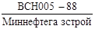
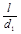
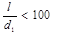
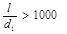
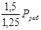
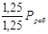
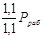

МИНИСТЕРСТВО СТРОИТЕЛЬСТВА ПРЕДПРИЯТИЙ
НЕФТЯНОЙ И ГАЗОВОЙ ПРОМЫШЛЕННОСТИ
ВСЕСОЮЗНЫЙ НАУЧНО-ИССЛЕДОВАТЕЛЬСКИЙ
ИНСТИТУТ
ПО СТРОИТЕЛЬСТВУ МАГИСТРАЛЬНЫХ ТРУБОПРОВОДОВ
СТРОИТЕЛЬСТВО
МАГИСТРАЛЬНЫХ И
ПРОМЫСЛОВЫХ ТРУБОПРОВОДОВ
Очистка полости
и испытание
ВСН 011-88
Миннефтегазстрой
Москва 1989
РАЗРАБОТАНЫ И ВНЕСЕНЫ Всесоюзным научно-исследовательские институтом по строительству магистральных трубопроводов (ВНИИСТ)
д-р техн. наук Р.М. Шакиров, канд. техн. наук И.Д. Красулин, инж. В.Г. Селиверстов, канд. техн. наук А.И. Тоут, инж. Л.Н. Калинин, инж. А.И. Ивочкин, канд. техн. наук М.С. Герштейн, инж. А.П. Зыкин, канд. техн. наук Е.М. Климовский, канд. техн. наук А.Д. Двойрис, инж. В.П. Ханкин.
ПОДГОТОВЛЕНЫ К УТВЕРЖДЕНИЮ Главным научно-техническим управлением Миннефтегазстроя
Б.С. Ланге - начальник отдела
С введением в действие «Ведомственных строительных норм. «Строительство магистральных и промысловых трубопроводов. Очистка полости и испытание» утрачивает силу «Инструкция по производству очистки полости и испытанию строящихся магистральных трубопроводов» ВСН 157-83/Миннефтегазстрой
СОГЛАСОВАНЫ Госстрой СССР
Главгосгазнадзор СССР
Главтранснефть
|
Министерство строительства предприятий нефтяной и газовой промышленности (Миннефтегазстрой) |
Ведомственные строительные нормы |
ВСН 011-88Миннефтегазстрой |
|
Строительство магистральных и промысловых трубопроводов. Очистка полости и испытание |
Взамен ВСН 157-83Миннефтегазстрой |
1. ОБЩИЕ ПОЛОЖЕНИЯ
1.1 Настоящие Ведомственные строительные нормы (ВСН) распространяются на производство работ по очистке полости, испытанию и удалению воды строящихся и реконструируемых магистральных и промысловых стальных трубопроводов* диаметром до 1420 мм (включительно), на которые распространяется действие СНиП 2.05.06-85 и «Норм проектирования промысловых стальных трубопроводов» ВСН 51-3/2.38-85/Мингазпром, Миннефтепром.
До ввода в действие нового СНиП 3.06.01 «Магистральные трубопроводы» (взамен пересматриваемого СНиП III-42-80) в части очистки полости и испытания магистральных трубопроводов следует руководствоваться настоящими ВСН.
* В тексте настоящих ВСН, за исключением особо оговоренных случаев, вместо слов «магистральный(е) или промысловый(е) трубопровод(ы)» будет употребляться слово «трубопровод».
1.2. Способы, параметры и схемы проведения очистки полости и испытания устанавливаются проектной организацией в рабочем проекте, проекте организации строительства.
|
Утверждены Министерством строительства предприятий нефтяной и газовой промышленности 27.12.88 г. |
Срок введения в
действие |
Проектной организацией должны быть обоснованы методы проведения испытаний при отрицательных температурах с учетом климатических данных по каждому строящемуся промыслу или участку трубопровода, предусмотрены дополнительные затраты на проведение испытаний и мероприятия по материально-техническому обеспечению производства работ.
1.3. На основании принятых проектной Организацией решений по очистке полости и испытанию трубопроводов строительно-монтажные организации собственными силами или с помощью проектно-технологических институтов разрабатывают соответствующие проекты производства работ.
1.4. Положения настоящих ВСН являются основанием для разработки ПОС, МПР и специальных (рабочих) или типовых инструкций применительно к конкретному трубопроводу или промыслу.
1.5. Учитывая сложность, повышенную стоимость и лимит времени на гидравлическое испытание при отрицательных температурах, сложность и повышенную опасность пневматических испытаний, затрудняющих производство строительно-монтажных работ в энергетических коридорах, при разработке в ПОС и ППР графиков организации строительства следует планировать проведение испытаний, как правило, во II и III кварталах года.
2. ОЧИСТКА ПОЛОСТИ ТРУБОПРОВОДОВ
2.1. Чистота полости трубопроводов должна обеспечиваться на всех этапах работы с трубой: транспортировке, погрузке, разгрузке, развозке и раскладке секций по трассе, сварке секций в нитку и укладке.
2.2. С целью предупреждения загрязнения полости и снижения затрат на последующую очистку строительно-монтажным организациям необходимо в процессе строительства принимать меры, исключающие попадание внутрь трубопровода воды, снега, грунта и посторонних предметов, в том числе не разгружать трубы на неподготовленной площадке, не волочить их по земле и т.д.
2.3. Для предотвращения загрязнений полости следует установить временные заглушки:
на отдельные трубы или секции (плети) при их длительном хранении в штабелях, на стеллажах;
на концах плетей в местах технологических разрывов.
2.4. Закачку воды в трубопровод для промывки и испытания осуществляют через фильтры, исключающие попадание в полость трубопровода песка, ила, торфа или посторонних предметов из водоема.
2.5. До ввода в эксплуатацию полость трубопровода должна быть очищена.
При очистке полости каждого трубопровода или его участка необходимо:
удалить случайно попавшие при строительстве внутрь трубопровода грунт, воду и различные предметы, а также поверхностный рыхлый слой ржавчины и окалины;
проверить путем пропуска поршня проходное сечение трубопроводов и тем самым обеспечить возможность многократного беспрепятственного пропуска очистных и разделительных или других специальных устройств при эксплуатации;
достигнуть качество очистки полости, обеспечивающее заполнение трубопровода транспортируемой средой без ее загрязнения и обводнения.
2.6. Очистка полости трубопроводов выполняется промывкой, продувкой, вытеснением загрязнений в потоке жидкости или протягиванием очистного устройства.
2.7. Промывка или продувка осуществляется одним из следующих способов:
с пропуском очистного или разделительного устройства;
без пропуска очистного или разделительного устройства.
2.8. Промывку и продувку с пропуском очистных или разделительных устройств следует выполнять на трубопроводах диаметром 219 мм и более.
2.9. Промывку и продувку без пропуска очистных или разделительных устройств допускается производить:
на трубопроводах диаметром менее 219 мм;
на трубопроводах любого диаметра при наличии крутоизогнутых вставок радиусом менее пяти диаметров трубопровода или при длине очищаемого участка менее одного километра.
2.10. Очистку полости подводных переходов трубопроводов диаметром 219 мм и белее, прокладываемых с помощью подводно-технических средств, производят:
промывкой с пропуском поршня-разделителя в процессе заполнения водой для проведения первого этапа гидравлического испытания;
продувкой с пропуском поршня или протягиванием очистного устройства перед проведением первого этапа пневматического испытания.
На подводных переходах трубопроводов диаметром менее 219 мм, сооружаемых с помощью подводно-технических средств, очистку полости осуществляют протягиванием, промывкой или продувкой без пропуска очистных устройств перед проведением первого этапа испытания.
Подводные переходы трубопроводов, укладываемые без помощи подводно-технических средств, очищают по единой технологии одновременно со всем трубопроводом.
2.11. При промывке, вытеснении загрязнений в потоке воды (жидкости) и удалении из трубопровода воды (жидкости), а также при продувке трубопровода с полнопроходной запорной арматурой разрешается пропуск очистных и разделительных устройств через линейную арматуру.
Перед пропуском очистных и разделительных устройств следует убедиться в полном открытии линейной арматуры (по указателям поворота затвора, положению конечных выключателей и т.д.).
Продувка трубопроводов с пропуском очистных устройств через неполнопроходимую линейную арматуру запрещается.
2.12. Если очистное или разделительное устройство застряло в трубопроводе в процессе промывки или продувки, то это устройство необходимо извлечь из трубопровода, устранить причину застревания, а участок трубопровода подвергнуть повторной промывке или продувке.
2.13. Промывка, как правило, совмещается с удалением воздуха и заполнением водой (жидкостью) трубопровода для гидравлического испытания.
2.14. Очистка полости вытеснением загрязнений в потоке воды (жидкости), как правило, совмещается с удалением воды (жидкости) после гидроиспытания трубопровода.
2.15. После очистки полости любым из указанных способов на концах Очищенного участка следует устанавливать временные заглушки, предотвращающие повторное загрязнение участка.
Промывка
2.16. Промывке подвергают трубопроводы любого назначения, испытание которых предусмотрено в проекте гидравлическим способом.
2.17. Пропуск очистного или разделительного устройства по трубопроводу осуществляется под давлением жидкости, закачиваемой для гидравлического испытания.
2.18. Впереди очистного или разделительного устройства для смачивания и размыва загрязнений заливают воду в объеме 10 - 15 % объема полости очищаемого трубопровода.
2.19. Принципиальная схема производства работ при промывке с пропуском очистного или разделительного устройства приведена на рис. 1.
2.20. Пропуск очистного или разделительного устройства в потоке жидкости обеспечивает удаление из трубопровода не только загрязнений, но и воздуха, что исключает необходимость установки воздухоспускных кранов (кроме кранов, предусмотренных проектом для эксплуатации), повышает надежность обнаружения утечек с помощью манометров.
2.21. Скорость перемещения очистного или разделительного устройства при промывке должна быть не менее 1 км/ч для обеспечения безостановочного устойчивого движения устройства.
2.22. Протяженность участков, промываемых с пропуском очистных и разделительных устройств, устанавливается с учетом расположения по трассе источников воды, рельефа местности и напора, развиваемого насосным оборудованием, а также технической характеристики очистного устройства (предельной длины его пробега).
2.23. Промывка считается законченной, когда очистное или разделительное устройство выйдет из трубопровода не разрушенным.
Рис. 1. Принципиальная схема производства работ при промывке трубопроводов:
а - подготовка участка к проведению промывки; б - подача воды перед поршнем-разделителем; в - пропуск поршня-разделителя в потоке воды; г - подготовка участка к испытанию; 1 - очищаемый участок; 2 и 7 - перепускные патрубки с кранами; 3 - поршень-разделитель; 4 - коллектор; 5 - наполнительные агрегаты; 6 - подводящий патрубок; 8 - линейная арматура; 9 - сливной патрубок.
Рис. 2. Принципиальная схема промывки без пропуска очистных или разделительных устройств:
а - подготовка участка к проведению промывки; б - подача воды; в - подготовка участка к испытанию; 1 - очищаемый участок; 2 - подводящий патрубок; 3 - кран; 4 - наполнительные агрегаты; 5 - линейная арматура; 6 - сливной патрубок.
2.24. При промывке без пропуска очистного или разделительного устройства качество очистки обеспечивается скоростным потоком жидкости.
2.25. Принципиальная схема промывки без пропуска очистных и разделительных устройств приведена на рис. 2.
2.26. Скорость потока жидкости при промывке без пропуска очистных и разделительных устройств должна составлять не менее 5 км/ч.
2.27. Протяженность участков трубопроводов диаметром более 219 мм, промываемых без пропуска очистных или разделительных устройств, устанавливается с учетом гидравлических потерь напора в трубопроводе и располагаемого напора насосного оборудования.
Оценку потерь напора в трубопроводе при промывке проводят по таблице рекомендуемого прил. 1.
2.28. Промывка без пропуска очистного или разделительного устройства считается законченной, когда из сливного патрубка выходит струя незагрязненной жидкости.
Продувка
2.29. Продувку выполняют сжатым воздухом или природным газом, поступающим из ресивера (баллона), непосредственно от источника природного газа или высокопроизводительных компрессорных установок.
Для продувки могут быть использованы также инертные газы, подводимые к трубопроводам от газовых установок промышленных предприятий.
2.30. Ресивер для продувки создается на прилегающем участке трубопровода, ограниченном с обеих сторон заглушками или запорной арматурой.
При заполнении ресивера воздухом передвижные компрессорные станции можно использовать по одной или объединить их в группы. В последнем случае нагнетательные трубопроводы каждого компрессора подключают к коллектору, по которому воздух подают в ресивер.
Рис. 3. Принципиальная схема продувки трубопроводов воздухом:
а - участок подготовлен к продувке плеча II; б - выпуск поршня из плеча II; в - участок подготовлен к продувке плеча I; г - выпуск поршня из плеча I; 1 и 5 - очистные поршни; 2, 3, 4 - перепускные патрубки с кранами; 6 - коллектор; 7 - подводящий патрубок; 8 - продувочный патрубок.
2.31. Принципиальная схема продувки трубопроводов сжатым воздухом приведена на рис. 3.
Узел подключения располагают в середине продуваемого участка, который разделяет его на два плеча, попеременно являющиеся ресивером и продувочным плечом.
Продувку с пропуском очистных поршней проводят в следующем порядке:
закачивают воздух по патрубку 7 и коллектору 6 в плечо I (см. рис. 3, а), при этом должны быть закрыты краны на патрубок 3 и 4 и предварительно проверена герметичность плеча I;
открывают кран на патрубке 4 и продувают плечо II (см. рис. 3, б);
отрезают продувочный патрубок 8 на конце плеча II и вместо него устанавливают заглушку (см. рис. 3, в);
срезают на конце плеча I заглушку и устанавливают продувочный патрубок;
закачивают воздух по подводящему патрубку и перепускному патрубку 4 в плечо II, при этом краны на патрубках 2 и 3 необходимо закрыть и предварительно проверить герметичность плеча II;
закрывают кран на подводящем патрубке 7;
открывают кран на перепускных патрубках 3 и 4 и продувают плечо I (см. рис. 3, в).
2.32. Природный газ для продувки магистральных трубопроводов следует подавать от заполненного газом действующего газопровода, пересекающего или проходящего вблизи строящегося трубопровода.
2.33. Продувку под давлением природного газа проводят в последовательности, приведенной на рис. 4.
2.34. Отбор природного газа из действующего газопровода производится в соответствии с принципиальными схемами, приведенными на рис. 5. Если рабочее давление в действующем газопроводе превышает давление испытания строящегося трубопровода, то в линии отбора газа следует устанавливать предохранительный клапан.
2.35. При отборе газа от действующих газопроводов и скважин следует проводить специальные мероприятия, обеспечивающие бесперебойную эксплуатацию этих объектов в период продувки строящихся участков: разрабатывать схемы подключения временного шлейфа, определять объем и давление газа для продувки, устанавливать время отбора газа и схему связи. Эти мероприятия должны быть согласованы с эксплуатирующими организациями и отражены в специальной (рабочей) инструкции.
Все сварочно-монтажные работы по прокладке временных шлейфов подачи газа необходимо выполнять в соответствии с нормами и правилами сооружения трубопроводов.
Рис. 4. Принципиальная схема продувки трубопроводов газом при подключении участка непосредственно к источнику газа:
а - вытеснение воздуха газом из участка I; б - пропуск очистного поршня по участку I; в - участок заполнен газом для продувки участка II; г - вытеснение воздуха газом из участка II; д - пропуск очистного поршня по участку II; I, II - продуваемые участки; 1 - источник газа являющийся ресивером для продувки участка I; 2 - байпас; 3 - кран; 4 - свеча
Рис. 5. Принципиальная схема подключения для отбора природного газа из действующих газопроводов:
а - непосредственно на месте проектной вырезки газопровода-отвода в действующий газопровод, б - через свечу действующего газопровода и временный шлейф, подведенный к продуваемому участку; 1 - продуваемый участок; 2 - поршень; 3 - свеча на узле запасовки поршней; 4 - действующий газопровод; 5 - кран коллектора; 6 - коллектор; 7 - кран отключающий; 8 - свеча на шлейфе; 9 - шлейф; 10 - свеча на действующем газопроводе; 11 - линейный кран на действующем газопроводе.
2.36. Продувку промысловых трубопроводов осуществляют под давлением сжатого воздуха или газа в соответствии с принципиальными схемами, приведенными на рис. 6.
2.37. При продувке трубопроводов газом из них предварительно должен быть вытеснен воздух.
Газ для вытеснения воздуха следует подавать под давлением не более 0,2 МПа (2 кгс/см2). Вытеснение воздуха считается законченным, когда содержание кислорода в газе, выходящем из трубопровода, составляет не более 2 %. Содержание кислорода определяют газоанализатором.
2.38. Подземные и наземные трубопроводы следует продувать с пропуском очистных поршней, оборудованных очистными и герметизирующими элементами. При этом скорость движения очистных поршней не должна превышать 70 км/ч.
2.39. Для продувки с пропуском поршня давление воздуха (или газа в ресивере при соотношении объемов ресивера и продуваемого участка 1:1) определяется по табл. 1.
|
Давление в ресивере, не менее, МПа (кгс/см2) |
||
|
для трубопроводов, очищенных протягиванием очистных, устройств |
для трубопроводов, не очищенных протягиванием очистных устройств |
|
|
До 250 От 300 до 400 От 500 до 800 От 1000 до 1400 |
1,0 (10) 0,6 (6) 0,5 (5) 0.4 (4) |
2,0 (20) 1,2 (12) 1,0 (10) 0,8 (8) |
Рис. 6. Принципиальная схема продувки промыслового трубопровода:
а - продувка природным газом от скважины; б - продувка сжатым воздухом; 1 - скважина; 2 - трубопровод; 3 - кран; 4 - заглушка; 5 - компенсатор; 6 - подводящий патрубок; 7 - продувочный патрубок; 8 - коллектор; 9 - компрессор
Диаметр перепускной (байпасной) линии и полнопроходного крана на ней должен быть равен 0,3 диаметра продуваемого участка.
2.40. При подаче газа от скважины или действующего газопровода давление в начале продуваемого участка должно составлять 0,5 - 0,7 от минимальных величин, указанных в табл. 1.
2.41. Надземные, монтируемые на опорах трубопроводы следует продувать с пропуском очистных устройств облегченной конструкции, масса и скорость перемещения которых не вызовут разрушения трубопровода или опор.
2.42. Для продувки надземных трубопроводов используют очистные поршни типа ОПКЛ или поршни-разделители типа ПР, ДЗК, ДЗК-РЭМ.
2.43. Пропуск поршней по надземным трубопроводам следует осуществлять под давлением газа или воздуха со скоростью не более 10 км/ч.
2.44. При любом способе прокладки трубопровода протяженность участка продувки с пропуском очистных или разделительных устройств устанавливается с учетом технической характеристики устройства (предельной длины его пробегами) давления продувки.
2.45. Продувка трубопроводов (кроме магистральных газопроводов) проводится с пропуском одного очистного устройства.
Продувка с пропуском очистного устройства считается законченной, когда после вылета очистного устройства из продувочного патрубка выходит струя незагрязненного воздуха или газа.
Если после вылета очистного устройства из трубопровода выходит струя загрязненного воздуха или газа, необходимо провести повторную продувку участка.
Если после вылета очистного устройства из продувочного патрубка выходит вода, по трубопроводу дополнительно следует пропустить разделитель. На магистральных газопроводах производится трехкратная продувка с пропуском очистных устройств.
2.46. Продувка без пропуска очистных устройств осуществляется скоростным потоком воздуха или газа.
2.47. Для продувки без пропуска поршня давление воздуха или газа в ресивере при соотношении объемов ресивера и продуваемого участка 2:1 и диаметре перепускной линии, равном 0,3 диаметра продувочного трубопровода, определяется по табл. 1.
2.48. Протяженность участка трубопровода, продуваемого без пропуска поршней, не должна превышать 5 км.
2.49. Продувка без пропуска очистного устройства считается законченной, когда из продувочного патрубка выходит струя незагрязненного воздуха или газа.
Продувка с использованием высокопроизводительных компрессорных установок
2.50. Продувка трубопроводов с использованием высокопроизводительных мобильных компрессорных установок на базе авиационных двигателей производится следующими методами:
скоростным потоком воздуха непосредственно от компрессорной установки (без применения ресивера и без пропуска очистного устройства);
с пропуском очистного устройства под давлением воздуха непосредственно от компрессорной установки (без применения ресивера);
с пропуском очистного устройства под давлением воздуха из ресивера, заполненного от компрессорной установки;
в комбинированном режиме, предусматривающем предварительную продувку полости трубопровода скоростным потоком воздуха и последующую продувку с пропуском очистного устройства без применения ресивера на обоих этапах (для сильно загрязненных участков).
2.51. Принципиальная схема продувки трубопровода о применением высокопроизводительной мобильной компрессорной установки типа ТКА 80/0,5 без использования ресивера и запорной арматуры приведена на рис. 7.
При работе установки выхлопные газы газогенератора 2 раскручивают турбокомпрессор 3, подающий сжатый воздух через предохранительный клапан 4 и подсоединительный трубопровод 5 в камеру пуска поршня 6. Поршень 7 при движении очищает полость трубопровода 8.
Рис. 7. Принципиальная схема продувки трубопровода с применением компрессорной установки типа ТКА-80/0,5:
1 - пульт управления; 2 - газогенератор; 3 - турбокомпрессор, 4 - предохранительный клапан; 5 - подсоединительный трубопровод; 6 - камера пуска поршня; 7 - поршень; 8 - продуваемый трубопровод; 9 - продувочный патрубок.
2.52. Продувке с пропуском очистного устройства под давлением воздуха непосредственно от компрессорной установки типа ТКА 80/0,5 подлежат участки трубопроводов диаметром 1020, 1220 и 1420 мм протяженностью соответственно не более 10, 20 и 30 км.
Протягивание
2.53. Очистка полости протягиванием очистного устройства производится непосредственно в технологическом потоке сварочно-монтажных работ, в процессе сборки и сварки отдельных труб или секций в нитку трубопровода.
Протягивание очистных устройств по надземным трубопроводам осуществляется до их укладки или монтажа на опорах.
2.54. В процессе сборки и сварки, трубопроводов очистное устройство перемещают внутри труб с помощью штанги трубоукладчиком (трактором). Загрязнения удаляют в конце каждой секции (рис. 8).
2.55. Очистку полости трубопроводов, собираемых в нитку с помощью внутреннего центратора, производят очистным устройством, конструктивно объединенным с этим центратором.
2.56. Трубопроводы, монтируемые с использованием наружного центратора или других приспособлений, очищают специальным устройством.
В качестве очистного устройства при протягивании следует использовать специальные приспособления, оборудованные очистными щетками или скребками, а также очистные поршни, применяемые для продувки трубопроводов.
2.57. В случае выполнения очистки полости промысловых трубопроводов протягиванием очистного устройства продувку или промывку разрешается не производить по согласованию с заказчиком.
Рис. 8. Принципиальная схема очистки полости трубопроводов в процессе их сборки в нитку с наружным центратором:
а - пропуск штанги очистного устройства через секцию; б - центровка секций и сварка стыка; в - очистка полости собранной секции; г - выброс загрязнений из секций; 1 - очистное устройство; 2 - наружный центратор; 3 - штанга; 4 - трубоукладчик.
Вытеснение загрязнений в потоке жидкости
2.58. Очистка полости трубопроводов вытеснением загрязнений в скоростном потоке жидкости осуществляется в процессе удаления жидкости после гидроиспытания с пропуском поршня-разделителя под давлением сжатого воздуха или газа.
2.59. Скорость перемещения поршня-разделителя в едином совмещенном процессе очистки полости и удаления воды должна быть не менее 5 км/ч и не более величины, определяемой технической характеристикой применяемого поршня-разделителя (см. п. 6.11).
2.60. Протяженность участка очистки полости вытеснением загрязнений в скоростном потоке жидкости устанавливается с учётом рельефа местности, давления в трубопроводе в начале очищаемого участка и характеристики поршня-разделителя (предельной длины его пробега), (см. прил. 1).
Особенности очистки полости при отрицательных температурах
2.61. При строительстве трубопроводов в условиях отрицательных температур особое внимание необходимо уделять защите труб, хранящихся в штабелях, от попадания в них снега, который превращается в лед и сильно затрудняет последующую очистку полости.
2.62. Основными способами очистки полости при отрицательных температурах следует считать продувку с пропуском поршня, протягивание или вытеснение загрязнений в скоростном потоке жидкости, удаляемой после гидроиспытания.
2.63. Продувка и протягивание не лимитированы временем воздействия отрицательных температур, позволяют удалить загрязнения и проверить проходное сечение по всей длине участка. Это исключает застревание поршней-разделителей в процессе заполнения трубопровода водой и удаления воды после гидроиспытания, значительно сокращает общее время производства работ, снижает риск замораживания воды в трубопроводе, разбавления и замерзания антифриза.
2.64. Оттаявшие при заполнении водой и гидроиспытании загрязнения, лед и снег эффективно вытесняются в скоростной по токе воды, удаляемой после гидроиспытания.
2.65. Надземные трубопроводы с П-образными компенсаторами, исключающими продувку или промывку с пропуском поршней, очищают протягиванием очистного устройства типа ОП в процессе сборки и сварки труб в нитку. Полость компенсатора перед монтажом продувают воздухом.
3. ИСПЫТАНИЕ НА ПРОЧНОСТЬ И ПРОВЕРКА НА ГЕРМЕТИЧНОСТЬ
3.1. Трубопроводы должны испытываться в соответствии о проектом (рабочим проектом) гидравлическим (водой, незамерзающими жидкостями), пневматическим (природным газом, воздухом) или комбинированным (воздухом и водой или газом и водой) способами. Нефтепроводы следует испытывать, как правило, гидравлическим способом.
Все способы испытания равноценны и применимы для трубопроводов любого назначения.
3.2. Испытание трубопровода на прочность и проверку на герметичность следует производить после полной готовности участка или всего трубопровода:
полной засыпки, обвалования или крепления на опорах;
установки арматуры и приборов, катодных выводов;
удаления персонала и вывозки техники из опасной зоны;
обеспечения постоянной или временной связи.
До выполнения указанных работ в комиссию по испытанию трубопровода должна быть представлена исполнительная документация на испытываемый объект.
3.3. Способы, параметры и схемы проведения испытания, в которых указаны места забора и слива воды, согласованные с заинтересованными организациями, а также пункты подачи газа и обустройство временных коммуникаций устанавливается рабочим проектом.
3.4. Протяженность испытываемых участков не ограничивается, за исключением случаев гидравлического и комбинированного испытания, когда протяженность участков назначается с учетом гидростатического давления.
3.5. Параметры испытания на прочность магистральных трубопроводов, независимо от их назначения и способа испытания, принимаются в соответствии с обязательным прил. 2.
Параметры
испытания на прочность промысловых трубопроводов регламентированы Инструкцией («Строительство
промысловых стальных трубопроводов. Технология и организация» 
3.6. Проверку на герметичность участка или трубопровода в целом производят после испытания на прочность и снижения испытательного давления до проектного рабочего в течение времени, необходимого для осмотра трассы (но не менее 12 ч).
3.7. Трубопровод считается выдержавшим испытание на прочность и проверку на герметичность, если за время испытания трубопровода на прочность труба не разрушилась, а при проверке на герметичность давление остается неизменным и не будут обнаружены утечки.
3.8. При разрыве, обнаружении утечек визуально, по звуку, запаху или с помощью приборов участок трубопровода подлежит ремонту и повторному испытанию на прочность и проверке на герметичность.
3.9. При многониточной прокладке промысловых трубопроводов допускается одновременное их испытание гидравлическим или пневматическим способом.
Гидравлическое испытание
3.10. Для проведения гидравлического испытания давление внутри трубопроводов создают водой или жидкостями с пониженной температурой замерзания, предусмотренными проектом.
3.11. В качестве источников воды для гидравлического испытания следует использовать естественные или искусственные водоемы (реки, озера, водохранилища, каналы и т.п.), пересекаемые строящимся трубопроводом или расположенные вблизи неге.
Объем воды в источниках должен быть достаточным для проведения испытания, а уровень (несмотря на наличие фильтра по п. 2.4) - обеспечивать подачу ее в трубопровод чистой (без механических примесей).
3.12. В состав основных работ по гидравлическому испытанию трубопровода входят:
подготовка к испытанию;
наполнение трубопровода водой;
подъем давления до испытательного;
испытание на прочность;
сброс давления до проектного рабочего;
проверка на герметичность;
сброс давления до 0,1 - 0,2 МПа (1 - 2 кгс/см2).
При необходимости выполняются работы, связанные с выявлением и ликвидацией дефектов.
3.13. Для гидравлического испытания трубопровод при необходимости следует разделить на участки, протяженность которых ограничивают с учетом разности высотных отметок по трассе и испытательных давлений, установленных проектом.
3.14. Гидравлическое испытание на прочность необходимо производить для:
трубопроводов (кроме магистральных нефте- и нефтепродуктопроводов) - на давление 1,1Рраб в верхней точке и не более гарантированного заводом испытательного давления (Рзав) в нижней точке (рис. 9);
нефтепроводов, нефтепродуктопроводов - на гарантированное заводом испытательное давление в нижней точке и не менее 1,1Рраб в верхней точке (рис. 10).
Время выдержки под испытательным давлением должно составлять 24 ч.
Рис. 9. График изменения давления при гидравлическом испытании трубопроводов (кроне магистральных нефтепроводов и нефтепродуктопроводов):
1 - заполнение трубопровода водой; 2 - подъем давления
до Рисп (а - в нижней точке трубопровода Рисп
 Рдав;
б - в верхней точке трубопровода Рисп = 1,1Рраб);
3 - испытание на прочность; 4 - снижение давления; 5 - проверка на
герметичность
Рдав;
б - в верхней точке трубопровода Рисп = 1,1Рраб);
3 - испытание на прочность; 4 - снижение давления; 5 - проверка на
герметичность
Рис. 10. График изменения давления при гидравлическом испытании магистральных нефтепроводов и нефтепродуктопроводов:
1 - заполнение трубопровода водой; 2 - подъем давления до Рисп (а - в нижней точке трубопровода Рисп = Рзав; б - в верхней точке трубопровода Рисп 1,1Рраб); 3 - испытание на прочность; 4 - снижение давления; 5 - проверка на прочность.
3.15. При подготовке к испытанию каждого участка необходимо в соответствии с принятой схемой испытания выполнить следующие операции:
отключить испытываемый участок от смежных участков сферическими заглушками или линейной арматурой (если перепад давления на арматуре не превысит паспортной характеристики);
смонтировать и испытать обвязочные трубопроводы наполнительных и опрессовочных агрегатов и шлейф подсоединения к трубопроводу;
смонтировать (при необходимости) узлы пуска и приема поршней;
установить контрольно-измерительные приборы;
смонтировать (при необходимости) воздухоспускные и сливные краны.
3.16. При заполнении трубопровода водой для гидравлического испытания из него необходимо удалить воздух.
Удаление воздуха из трубопровода следует осуществлять с помощью поршней-разделителей или через воздухоспускные краны, предназначенные для целей эксплуатации или установленные на концах участка трубопровода.
3.17. Диаметр воздухоспускных кранов следует выбирать в зависимости от суммарной производительности наполнительных агрегатов и диаметра испытываемого трубопровода.
Для трубопроводов диаметром до 500 мм и суммарной производительности агрегатов 300 м/ч устанавливают воздухоспускные краны диаметром 25 - 32 мм, при диаметрах трубопроводов более 500 мм и большей суммарной производительности агрегатов - воздухоспускные краны диаметром 50 - 100 мм.
На концах испытываемых участков следует устанавливать воздухоспускные краны диаметром не менее 50 мм.
3.18. Наполнение трубопровода без пропуска поршня-разделителя необходимо осуществлять при открытых воздухоспускных кранах, которые закрывают, как только через них перестанет выходить воздух и потечет плотная струя воды.
3.19. Наполнение трубопровода с пропуском поршня-разделителя производится при полностью закрытых воздухоспускных кранах и открытой линейной запорной арматуре.
3.20. На трубопроводах, очищаемых промывкой (поршни-разделители перемещаются под давлением воды), процесс вытеснения воздуха объединяют с процессом очистки полости трубопровода (см. рис. 1).
Время наполнения трубопровода водой может быть определено по номограмме рекомендуемого прил. 1.
3.21. После выхода поршня-разделителя через сливной патрубок закрывают запорную арматуру, срезают патрубок и устанавливают сферическую заглушку на конце трубопровода.
Затем поднимается давление в трубопроводе наполнительными агрегатами до давления, максимально возможного по их техническим характеристикам, а далее - опрессовочными агрегатами - до давления испытания.
Пневматическое испытание
3.22. Для проведения пневматического испытания давление внутри газопроводов, нефте- и нефтепродуктопроводов создают воздухом или природным газом.
3.23. В качестве источников сжатого воздуха используют передвижные компрессорные установки, которые в зависимости от объема полости испытываемого участка и величины испытательного давления применяют по одной или объединяют в группы.
Время наполнения трубопровода воздухом может быть определено по номограмме рекомендуемого прил. 1.
3.24. Природный газ для испытания трубопроводов следует подавать от скважины (только для промысловых трубопроводов) или от действующих газопроводов, пересекающих строящийся объект или проходящих непосредственно около него.
3.25. Давление при пневматическом испытании на прочность трубопровода в целом на последнем этапе должно быть равно 1,1Рраб, а продолжительность выдержки под этим давлением - 12 ч.
График изменения давления в трубопроводе при пневматическом испытании приведен на рис. 11.
3.26. Заполнение трубопровода воздухом или природным газом производится с осмотром трассы при давлении, равном 0,3 от испытательного на прочность, но не выше 2 МПа (20 кгс/см2).
3.27. В процессе закачки в природный газ или воздух следует добавлять одорант, что облегчает последующий поиск утечек в трубопроводе. Для этого на узлах подключения к источникам газа или воздуха необходимо монтировать установки для дозирования одоранта. Рекомендуемая норма одоризации этилмеркаптаном 50 - 80 г на 1000 м3 газа или воздуха.
3.28. Если при осмотре трассы или в процессе подъема давления будет обнаружена утечка, то подачу воздуха или газа в трубопровод следует немедленно прекратить, после чего должна быть установлена возможность и целесообразность дальнейшего проведения испытаний или необходимость перепуска воздуха или газа в соседний участок.
Рис. 11. График изменения давления в трубопроводе при пневматическом испытании:
1 - подъем давления; 2 - осмотр трубопровода; 3 - испытание на прочность; 4 - сброс давления; 5 - проверка на герметичность.
3.29. Осмотр трассы при увеличении давления от 0,3Рисп до Рисп и течение времени испытания на прочность запрещается.
3.30. После окончания испытания трубопровода на прочность явление необходимо снизить до проектного рабочего и только после этого выполнить контрольный осмотр трассы для проверки на герметичность.
Воздух или газ при сбросе давления следует по возможности перепустить в соседние участки.
3.31. Учитывая, что при пневматическом испытании процессы наполнения трубопровода природным газом и воздухом до испытательного давления занимают значительное время, необходимо особое внимание обращать на рациональное использование накопленной в трубопроводе энергии путем многократного перепуска и перекачивания природного газа или воздуха и испытанных участков в участки, подлежащие испытанию. Для предотвращения потерь газа или воздуха при разрывах заполнение трубопровода напорной средой и подъем давления до испытательного необходимо производить по байпасным линиям при закрытых линейных кранах.
Комбинированное испытание
3.32. При комбинированном испытании давление внутри трубопровода создают двумя средами - природным газом воздухом и жидкостью (водой или антифризами).
3.33. Испытываемый участок заполняют природным газом от скважины (действующего газопровода) или сжатым воздухом от компрессорных установок в порядке, принятом для пневмоиспытания до создания в нем давления, равного давлению в действующем газопроводе или максимальному давлению нагнетания компрессора.
Рис. 12. График изменения давления в трубопроводе при комбинированном испытании:
1 - подъем давления до Рисп; 2 - осмотр трубопровода (В - вода; Г - газ; в
верхней точке Рисп  1,1Рраб; в нижней точке Рисп
1,1Рраб; в нижней точке Рисп
 1,1Рдав);
3 - испытание на прочность; 4 - сброс давления; 5 - проверка на герметичность
1,1Рдав);
3 - испытание на прочность; 4 - сброс давления; 5 - проверка на герметичность
3.34. После заполнения участка газом или воздухом подъем давления в нем до испытательного следует производить опрессовочными агрегатами, закачивая в трубопровод жидкость.
3.35. Давление при комбинированном испытании на прочность должно быть равно в верхней точке 1,1Рраб, а нижней точке - не превышать заводского испытательного давления труб. Продолжительность выдержки участка под этим давлением 12 ч.
3.36. График изменения давления в трубопроводе при комбинированном испытании приведен на рис. 12.
Предварительное испытание крановых узлов запорной арматуры
3.37. Предварительное испытание крановых узлов запорной арматуры может производиться по согласованию заказчика с подрядчиком на основании «Правил о договорах подряда на капитальное строительство», утвержденных постановлением Совета Министров СССР от 26 декабря 1980 г. № 1550.
Предварительное испытание крановых узлов производится с целью выявления дефектов и определения герметичности этого узла до испытания в составе линейной части трубопровода.
3.38. Предварительное испытание крановых узлов следует выполнять гидравлическим (вода, незамерзающие жидкости) или пневматическим (воздух, природный газ) способом в соответствии с рекомендуемым прил. 3.
3.39. Предварительное испытание крановых узлов газопроводов диаметром от 530 до 1420 мм должно производиться непосредственно на трассе - на месте проектного расположения каждого узла.
Предварительное испытание крановых узлов диаметром от 159 до 426 мм следует производить либо на трассе, либо вне трассы, вблизи источника воды, соединяя несколько узлов в общую группу. После испытания группу крановых узлов разъединяют на отдельные узлы, которые транспортируют к месту монтажа на трассе.
3.40. При производстве работ на газопроводах в энергетических коридорах предварительное испытание крановых узлов запорной арматуры следует производить природным газом. Крановый узел в этом случае следует испытывать совместно с участком газопровода и перемычками между параллельными нитками трубопроводов.
3.41. На отдельно строящихся трубопроводах предварительное испытание крановых узлов запорной арматуры следует производить пневматическим (воздухом) или гидравлическим способами.
Особенности и методы гидравлического испытания при отрицательных температурах
3.42. Гидравлическое испытание при отрицательных температурах воздуха или грунта допускается только при условии предохранения трубопровода, линейной арматуры и технологического оборудования от замораживания.
3.43. Испытание трубопроводов при отрицательных температурах следует выполнять одним из методов, приведенных в табл. 2.
|
Испытательная среда |
Основная область применения |
|
|
Пневматический |
Природный газ, воздух |
Трубопроводы любого диаметра |
|
Гидравлический |
Вода, имеющая естественную температуру водоема |
Подземные без теплоизоляции трубопроводы диаметром 720 - 1420 мм |
|
Предварительно подогретая вода |
Теплоизолированные трубопроводы диаметром 219 - 720 мм |
|
|
Подземные без теплоизоляции трубопроводы диаметром 219 - 530 мм |
||
|
Жидкости с пониженной температурой замерзания |
Трубопроводы диаметром до 219 мм |
|
|
Комбинированный |
Природный газ (воздух) и жидкость с пониженной температурой замерзания |
Трубопроводы любого диаметра, испытательное давление в которых невозможно создать газом (воздухом) |
3.44. Выбор метода испытания конкретного участка трубопровода должен осуществляться с учетом:
результатов теплотехнических расчетов параметров испытания;
наиболее рациональной области применения метода испытания;
ограничений использования метода испытания;
конструкции, назначения, диаметра и способа прокладки трубопровода;
данных о грунтовых условиях и содержании влаги по трассе, о погодных условиях в период испытания;
наличия технических средств, источников газа или воды для проведения испытаний;
возможности поиска утечек и необходимости проведения работ по ликвидации дефектов, а также полной потери испытательной среды при пневматическом и комбинированном методах;
требований техники безопасности, охраны труда и окружающей среды.
3.45. В условиях отрицательных температур следует учитывать возможные ограничения в применении метода испытания:
испытание водой - сезонное отсутствие воды (промерзание рек, озер и т.д.), требования защиты окружающей среды при сливе воды из трубопровода, теплотехнические параметры испытания;
испытание воздухом - специфика эксплуатации передвижных компрессорных установок при низких температурах наружного воздуха;
температура стенок трубопровода при испытании на прочность и проверке на герметичность ограничивается температурой хладостойкости материала труб.
3.46. Гидроиспытания при отрицательных температурах имеют специфические особенности, обусловленные возрастающей ролью фактора времени. Поэтому при проведении таких испытаний необходимо:
завершить их в строго определенное расчетом время, в течение которого исключается замерзание воды в трубопроводе. Следовательно, нужна тщательная подготовка, теплотехнический расчет параметров испытания и высокий уровень организации работ;
обеспечить осязательный контроль температуры жидкости в трубопроводе и оценку изменения давления при проверке на герметичность с учетом изменения температуры;
укрытие и утепление трубопровода, его открытых частей, арматуры, узлов подключения агрегатов и приборов;
провести очистку полости продувкой, протягиванием или совместить очистку полости с удалением жидкости после гидроиспытания;
установить узлы приема поршней, исключив заполнение трубопровода водой на открытый конец, слив воды самотеком и другие неконтролируемые процессы перемещения воды в трубопроводе;
обеспечить возможность немедленного удаления жидкости из трубопровода, что гарантируется наличием источников газа или воздуха и их подсоединением до начала испытаний к обоим концам испытываемых участков.
3.47. Наполнение трубопровода водой для гидравлического испытания следует проводить с помощью наполнительных агрегатов без пропуска очистных или разделительных устройств.
Пропуск поршней в процессе заполнения трубопровода водой допускается при условии предварительного прогрева магистрали прокачкой воды.
3.48. с целью повышения надежности производства испытаний в зимних условиях не допускается заполнение трубопровода водой до проведения:
тщательной засыпки подземного и обвалования наземного трубопровода на всем его протяжении;
нанесения теплоизоляции на надземный трубопровод и дополнительного утепления мест укладки трубопровода на опоры;
утепления и укрытия линейной арматуры, узлов запуска и приема поршней, сливных патрубков и других открытых частей испытываемого трубопровода;
утепления и укрытия узлов подключения наполнительных и опрессовочных агрегатов, обвязочных трубопроводов с арматурой;
мероприятий по предупреждению замерзания используемых при испытании приборов;
работ по присоединению умов подключения к источнику газа или воздуха, используемому для удаления воды из трубопровода.
3.49. Необходимо стремиться к тому, чтобы вода в трубопроводе в период подготовки испытания как можно меньше времени находилась в статическом состоянии.
При возникновении задержек в производстве работ по испытанию, приводящих к превышению принятого в расчете времени испытания, следует возобновить прокачку воды с определенной расчетом температурой через испытываемый участок. Допускается осуществлять прокачку воды в период между испытаниями на прочность и герметичность, а также в период, когда трубопровод находится не под испытательным давлением.
3.50. При подготовке к гидравлическому испытанию в осенне-зимний период, чтобы предупредить замерзание воды при внезапном похолодании, необходимо тщательно проконтролировать засыпку или обвалование трубопровода на всем его протяжении. Особое внимание следует обратить на то, чтобы арматура и узлы подключения были тщательно укрыты.
После того как выпадет снег, необходимо дополнительно утеплить трубопровод путем его обвалования снегом, имея в виду, что теплозащитные свойства слоя снега толщиной 20 см эквивалентны примерно 100 см грунта.
Испытание подземных трубопроводов без теплоизоляции с прокачкой воды
3.51. Для обеспечения испытания водой подземного трубопровода при отрицательной температуре грунта на уровне заложения трубы необходимо проводить предварительный прогрев магистрали и окружающего грунта путем прокачки воды.
3.52. Принципиальная схема испытания подземного газопровода без теплоизоляции при отрицательной температуре грунта приведена на рис. 13.
3.53. После заполнения трубопровода осуществляется прокачка воды с целью создания вокруг трубы талого пространства, исключающего льдообразование в трубопроводе.
Рис. 13. Принципиальная схема испытаний водой подземного трубопровода без теплоизоляции при отрицательной температуре грунта:
а - заполнение, подъем давления, испытание; б - очистка полости и удаление воды с пропуском разделителя под давлением газа; 1 - трубопровод; 2 - разделитель; 3, 4, 5 - краны подачи газа; 6, 7, 8, 9 - задвижки; 10 - заглушка; 11 - наполнительный агрегат; 12 - опрессовочный агрегат.
3.54. Для подземных трубопроводов диаметром 219 - 530 мм необходимо производить предварительный подогрев прокачиваемой через трубопровод воды. Температура подаваемой в трубопровод воды не должна превышать максимальной рабочей температуры для конкретного трубопровода.
Испытание подогретой водой надземных теплоизолированных трубопроводов
3.55. Принципиальная схема испытания подогретой водой надземного теплоизолированного трубопровода приведена на рис. 14.
3.56. Приготовление воды для испытания промысловых газопроводов следует производить в резервуарах воды, входящих в состав установок комплексной подготовки газа. Возможно использование для испытания подогретой воды от теплообменников, водоподогревательных установок, коммуникаций горячего водоснабжения.
3.57. Температура подаваемой в трубопровод воды не должна превышать максимальной рабочей температуры испытываемого трубопровода.
3.58. После заполнения трубопровода прокачка воды продолжается до тех пор, пока температура воды на конце трубопровода не достигнет расчетной, обеспечивающей последующее проведение испытаний без замерзания воды в течение расчетного времени.
3.59. В процессе прокачки следует контролировать температуру воды на входе и выходе из трубопровода.
Испытание жидкостями с пониженной температурой замерзания
3.60. Испытание трубопроводов при отрицательных температурах следует выполнять с использованием жидкостей на основе:
хлористого кальция с добавками ингибиторов коррозии;
метанола;
гликолем, в том числе этиленгликоля (ЭГ) и диэтиленгликоля (ДЭГ);
дизельного топлива;
подтоварной воды;
криопэгов.
Рис. 14. Принципиальная схема испытания трубопровода подогретой водой:
а - заполнение, подъем давления, испытание; б - удаление воды; 1 - трубопровод; 2 - компенсатор; 3 - разделитель; 4 - заглушка; 5 - наполнительно-опрессовочная станция; 6 - емкость горячей воды; 7 - 11 - задвижки; 12, 13, 14 - краны.
3.61. Температурный диапазон применения жидкости для испытания трубопроводов определяется температурой ее замерзания, которая зависит от концентрации раствора.
3.62. Использование для испытания жидкостей с пониженной температурой замерзания разрешается только по специальной технологии с учетом ее приготовления и утилизации, указанной в проекте.
3.63. Водный раствор, используемый для испытания трубопровода, готовится путем смешения безводного хлористого кальция (метанола, ЭГ или ДЭГ) с технической или питьевой водой, свободной от твердых взвесей или примесей.
Процентное содержание хлористого кальция (метанола, ЭГ, ДЭГ) в растворе следует определять по плотности раствора и контролировать с помощью ареометра.
3.64. Испытание трубопровода необходимо планировать так, чтобы в период проведения этих работ температура внутри трубопровода не снизилась (например, вследствие понижения температуры наружного воздуха) до температуры замерзания испытательной жидкости.
3.65. Учитывая, что наличие воды, снега, льда в трубопроводе приводит к разбавлению поступающих в полость первых порций раствора и, следовательно, к повышению температуры их замерзания, необходимо использовать растворы, концентрация которых обеспечивают температуру замерзания раствора ниже возможной температуры наружного воздуха в период испытания.
3.66. Испытание трубопровода жидкостью с пониженной температурой замерзания следует производить в соответствии с принципиальной схемой, приведенной на рис. 15.
3.67. При разрыве трубопровода необходимо оперативно локализовать зону выброса испытательной жидкости с помощью запруд, обвалования грунтом с последующей нейтрализацией (сбор антифриза, разбавление водой до уровня, не превышающего предельно допустимой концентрации, и др.).
Рис. 15. Принципиальная схема испытания трубопровода жидкостью с пониженной температурой замерзания:
а - заполнение, подъем давления, испытание; б - удаление жидкости газом с пропуском разделителей; 1 - трубопровод; 2 - компенсатор; 3 - разделитель; 4 - заглушка; 5 - опрессовочный агрегат; 6, 7 - резервуар; 8 - 14 - задвижки; 15, 16 - краны; 17 - скважина.
3.68. При использовании водных растворов хлористого кальция, метанола, ЭГ и ДЭГ в качестве жидкости с пониженной температурой замерзания следует соблюдать специальные требования по их хранению, транспортировке и утилизации.
3.69. Испытание с применением отрицательно-температурной воды (криопэга) из сеноманских и других геологических горизонтов, подтоварной воды следует производить на трубопроводах любого назначения в районах сооружения промыслов, где имеются источники таких вод и возможен их отбор в необходимых объемах.
3.70. Возможный период проведения испытания определяется из условия, что температура замерзания криопэга, подтоварной воды должна быть ниже минимальной температуры грунта засыпки (при подземной прокладке) или температуры наружного воздуха (при надземной прокладке) в процессе испытания.
4. УДАЛЕНИЕ ВОДЫ ИЗ ТРУБОПРОВОДОВ ПОСЛЕ ГИДРАВЛИЧЕСКОГО ИСПЫТАНИЯ
4.1. После гидравлического испытания удаление воды при строительстве должно предусматриваться только для газопроводов и только на последнем этапе испытания способом, указанным в проекте (рабочем проекте).
4.2. Удаление воды из нефте- и нефтепродуктопроводов, а также осушка специальных трубопроводов и трубопроводов, предназначенных для транспортирования сероводородосодержащего природного газа или газового конденсата должны производиться в период пусконаладочных работ силами эксплуатирующей организации.
4.3. Для удаления воды из газопровода диаметром 219 мм и более пропускает последовательно поршни-разделители под давлением сжатого воздуха или природного газа в два этапа:
предварительный - удаление основного объема воды одним поршнем-разделителем;
контрольный - окончательное удаление воды из газопровода одним поршнем-разделителем.
4.4. Результаты удаления воды следует считать удовлетворительными, если впереди контрольного поршня-разделителя нет воды и он вышел неразрушенным. В противном случае необходимо дополнительно пропустить контрольный поршень-разделитель.
4.5. На трубопроводах диаметром до 219 мм и при наличии крутоизогнутых вставок радиусом менее пяти диаметров трубопровода удаление воды следует производить непосредственно воздухом или природным газом от скважины или из ресивера на открытый конец испытанного участка.
4.6. Удаление воды считается законченным без пропуска поршней-разделителей, когда из трубопроводов выходит чистая струя воздуха или газа.
4.7. После испытания трубопровода комбинированным методом из него необходимо удалить воду в следующем порядке:
первый этап - предварительный слив воды под давлением природного газа или воздуха через патрубки, заранее установленные в местах закачки воды;
второй этап - с пропуском поршней-разделителей, перемещаемых по трубопроводу под давлением газа или воздуха.
4.8. Скорость перемещения поршня-разделителя при удалении воды должна составлять не менее 5 км/ч.
4.9. Давление газа (воздуха) в начале участка должно определяться согласно рекомендованному прил. 1 в зависимости от перепада высот по трассе, гидравлических потерь при движении воды и перепада давления на поршень. При этом диаметр запорной арматуры и диаметр перепускной линии от ресивера к участку должен составлять
d = (0,15 ¸ 0,2)D.
4.10. Оптимальные размеры сливных
патрубков определяют в зависимости от диаметра очищаемого участка D и отношения длины к диаметру этого патрубка 
4.11. Удалять воду из трубопроводов после испытаний следует в основном в направлении от наиболее высоких точек (по рельефу местности) к пониженным.
4.12. С целью обеспечения охраны окружающей среды следует отвести использованную воду в естественные (котлованы, овраги и т.п.) или специально подготовленные водоемы (амбары, отстойники, сооружаемые в виде траншеи или путем обвалования). Для гашения энергии струи вытекающей из трубопровода воды необходимо устанавливать водоотбойники (например, железобетонные пригрузы, плиты и т.п.), располагать патрубок слива воды перпендикулярно дну водоема.
|
 |
|
|
 |
|
|
Отношение диаметра сливного патрубка к диаметру трубопровода |
0,2 - 0,3 |
0,3 - 0,4 |
0,4 - 0,5 |
0,5 - 0,6 |
4.13. После гидравлического испытания участка газопровода запорная арматура на узле приема поршня-разделителя должна быть открыта только после полной готовности этого участка к удалению из него воды и получения извещения о начале движения поршня-разделителя из узла пуска. Это предотвращает образованию воздушных пробок и снижает давление воздуха (газа), необходимое для удаления воды.
4.14. Из коротких участков трубопроводов категории В и I после их предварительного гидравлического испытания до укладки или крепления на опорах слив воды производится самотеком.
4.15. Принципиальные схемы инвентарных узлов пуска поршней-разделителей приведены на рис. 16.
Указанные схемы узлов пуска обеспечивают производство работ как при положительных, так и при отрицательных температурах. Технологические возможности схемы с универсальной обвязкой (рис. 16, а) выше, чем у схемы с раздельной подачей газа (воздуха) и воды (рис. 16, б). Она позволяет выполнять промывку с пропуском поршней, заполнение водой и предварительный прогрев трубопровода и окружающего грунта в условиях отрицательных температур, полное удаление воды после гидроиспытания с последовательным пропуском основного и контрольного поршня-разделителя. Установленный на конце трубопровода инвентарный узел используется для приема поршней-разделителей.
Рис. 16. Принципиальные схемы инвентарных узлов пуска очистных и разделительных устройств:
а - с универсальной обвязкой трубопровода для подачи газа (воздуха) и воды; б - с обвязкой трубопроводами для раздельной подачи газа (воздуха) и воды; 1 - приварная заглушка; 2 - очистное устройство; 3 - стопорное устройство; 4 - датчики давления и температуры; 5 - манометр; 6 - сигнализатор контроля движения очистного устройства; 7 - шлейф от источника воздуха или газа; 8 - укрытие с обогревом при производстве работ в условиях отрицательных температур; 9 - шлейф от наполнительных агрегатов; 10 - шлейф от опрессовочных агрегатов.
4.16. При производстве работ в условиях низких температур поршни-разделители заранее запасовывают в инвентарные узлы пуска и приема, смонтированные на обоих концах очищаемого участка и подключенные к источникам воздуха или природного газа. Такое решение обеспечивает возможность незамедлительного запуска поршней-разделителей без вскрытия трубопровода. Эти поршни служат не только для запланированного удаления воды, но и для аварийного обезвоживания трубопровода при выявлении дефектов в процессе испытания (разрывах, утечках и др.).
4.17. Принципиальные схемы узлов приема поршней-разделителей, монтируемых на газопроводах, приведены на рис. 17. Узел (рис. 17, а) следует применять на газопроводах диаметром более 500 мм при необходимости отвода воды на расстояние более 100 м по временному шлейфу меньшего диаметра, а также при гидравлическом испытании при отрицательных температурах. На окончательном этапе удаления воды следует демонтировать концевую заглушку для выпуска поршней-разделителей на открытый конец газопровода.
Узел (рис. 17, б) целесообразно использовать на газопроводах малого диаметра.
4.18. Узлы пуска и приема очистных и разделительных устройств следует располагать в местах технологических разрывов трубопровода (места установки линейной арматуры, переходы через естественные препятствия и т.п.).
4.19. Узлы пуска и приема, а также сливные и продувочные патрубки во избежание их смещения и вибрации должны быть надежно закреплены.
4.20. Контроль за движением разделителей должен осуществляться по показаниям сигнализаторов, манометров, измеряющих давление в узлах пуска и приема поршней, по сообщениям обходчиков и другими методами.
Рис. 17. Принципиальные схемы узлов приема поршней-разделителей, монтируемых на газопроводах:
а - закрытого типа; б - открытого типа с задвижкой; 1 - линейный кран; 2 - манометр; 3- сигнализатор для контроля за движением разделителя; 4 - очистные или разделительные устройства; 5 - стопор; 6 - сливной патрубок; 7 - контрольный сливной патрубок.
5. КОМПЛЕКСНЫЕ ПРОЦЕССЫ ОЧИСТКИ ПОЛОСТИ, ИСПЫТАНИЯ И УДАЛЕНИЯ ЖИДКОСТИ
5.1. Завершающие процессы строительства трубопроводов: очистка полости, испытание и удаление жидкости должны быть объединены общими технологическими и организационными решениями в едином комплексном процессе.
5.2. В комплексные процессы, помимо основных процессов очистки полости, испытания, удаления жидкости, входят следующие работы:
подготовительные (сварочно-монтажные и другие работы) обеспечивают возможность проведения основных процессов;
промежуточные (сварочно-монтажные и другие работы) обеспечивают возможность последовательного проведения соответствующих основных процессов;
заключительные (сварочно-монтажные и другие работы) проводят с целью демонтажа узлов и оборудования, использованных при очистке полости и испытании, и подготовки объекта (участка) к последующей эксплуатации (только в пределах обязанностей строительно-монтажных организаций);
ликвидация отказов (сварочно-монтажные и другие работы) обеспечивает устранение возможных отказов (застревание в трубопроводе очистных и разделительных устройств, уточки, разрывы и т.п.) и восстановление единой непрерывной нитки грубо провода.
5.3. Процесс испытания трубопровода является ведущим, определяет структуру всего комплекса работ и соответствующую организацию их выполнения.
5.4. Наиболее экономичными по времени и стоимости производства работ являются комплексные процессы очистки полости и испытания трубопроводов с использованием только одной рабочей среды, например, продувка и испытание природным газом; промывка и гидроиспытание; гидроиспытание и очистка полости вытеснением загрязнений в скоростном потоке удаляемой из трубопровода жидкости.
5.5. Для комплексного гидравлического испытания трубопроводов большого диаметра как при положительных, так и при отрицательных температурах следует применять индустриальную технологию очистки полости и испытания, предусматривающую использование следующих прогрессивных технологических и технических решений:
рациональных технологических схем гидравлического испытания, обеспечивающих одновременное выполнение основных этапов работ на соседних участках трубопровода;
единого технологического процесса очистки полости и удаления воды из трубопровода после гидравлического испытания, повышающего качество очистки полости, сокращающего количество пропусков поршней и исключающего замораживание магистралей при работе в зимних условиях;
максимальной протяженности участков пропуска поршней для очистки полости и удаления воды, сокращающего количество технологических разрывов и потери воды при испытании;
предварительного прогрева трубопровода и окружающего грунта прокачкой воды, исключающего перерыв в работе бригады по испытанию в зимний период;
монтажа камер пуска-приема поршней, обеспечивающих возможность аварийного удаления воды при выявлении дефектов и значительного сокращения сроков их устранения, особенно в условиях отрицательных температур;
индустриального монтажа наполнительно-опрессовочного оборудования, шлейфов низкого и высокого давления, сокращающего объем сварочно-монтажных работ и исключающего необходимость комплектации запорной арматуры на трассе;
оптимальных схем обвязки наполнительных агрегатов, обеспечивающих возможность их работы параллельно, последовательно и попарно-последовательно в зависимости от диаметра и протяженности испытываемого трубопровода и перепада высот по трассе;
дублирующих систем заливки насосов наполнительных агрегатов, надежного утепления оборудования и шлейфов, исключающих простои агрегатов при работе в условиях отрицательных температур.
5.6. Структура основных комплексных процессов очистки полости, испытания и удаления жидкости из трубопроводов при различных условиях строительства приведена в табл. 4.
|
Основная область применения |
|
|
1 |
2 |
|
При положительной или отрицательной температуре на уровне трубопровода |
|
|
1. Продувка газом (воздухом) с пропуском поршня Испытание газом (воздухом) |
Трубопроводы диаметром более 219 мм |
|
2. Протягивание очистного устройства или продувка скоростным потоком газа (воздуха) |
Трубопроводы диаметром менее 219 мм Трубопроводы с компенсаторами диаметром до 1420 мм |
|
Испытание газом (воздухом) |
Участки трубопроводов протяженностью менее 1 км |
|
При положительной температуре на уровне трубопровода |
|
|
3. Заполнение водой Испытание водой Очистка полости, совмещенная с удалением воды газом (воздухом) - по п. 2.58, 4.3, 4.5 |
Трубопроводы любого диаметра |
|
4. Промывка Испытание водой |
Трубопроводы любого диаметра |
|
5. Заполнение газом и водой Испытание комбинированное Удаление воды газом (воздухом) по п. 4.7 |
Трубопроводы любого диаметра проложенные в горной местности |
|
При отрицательной температуре на уровне трубопровода |
|
|
6. Заполнение и предварительный прогрев трубопровода прокачкой воды, имеющей естественную температуру водоема Испытание водой Очистка полости, совмещенная с удалением воды газом (воздухом) - по пп. 2.58, 4.3 |
Подземные трубопроводы диаметром 530 - 1420 мм |
|
7. Заполнение и предварительный прогрев трубопровода прокачкой подогретой воды (подтоварной воды) Испытание подогретой водой (подтоварной водой) Очистка полости, совмещенная с удалением воды газом (воздухом) - по пп. 2.58, 4.3 |
Подземные трубопроводы диаметром 219 - 530 мм Надземные теплоизолированные трубопроводы диаметром 219 - 720 мм |
|
8. Продувка газом (воздухом) или протягивание очистного устройства Заполнение и предварительный прогрев трубопровода прокачкой подогретой воды Испытание подогретой водой Удаление воды газом (воздухом) по п. 4.3 |
Подземные трубопроводы диаметром 219 - 530 мм Надземные теплоизолированные трубопроводы диаметром 219 - 720 мм |
|
9. Протягивание очистного устройства или продувка скоростным потоком газа (воздуха) Испытания жидкостями с пониженной температурой замерзания Удаление жидкости газом (воздухом) по п. 4.5 |
Трубопроводы диаметром менее 219 мм |
6. МАШИНЫ, УСТРОЙСТВА И ПРИБОРЫ, МЕТОДЫ ПОИСКА УТЕЧЕК
Машины
6.1. Для продувки, пневматического испытания и удаления из газопровода воды следует применять компрессорные установки, указанные в табл. 5.
6.2. Для промывки и гидравлического испытания трубопроводов следует использовать наполнительные и опрессовочные агрегаты, приведенные в табл. 6.
6.3. Для закачки в трубопровод воды и воздуха допускается использовать машины, применяющиеся в других отраслях народного хозяйства и обеспечивающие параметры и режимы процессов очистки полости и испытания.
6.4. Технические средства, применяемые для очистки полости и гидравлического испытания трубопроводов при отрицательных температурах, должны:
обеспечивать надежность их запуска, управления и эксплуатации;
исключать замораживание воды в системах ее забора, подачи и слива;
позволять осуществлять их быстрый монтаж и демонтаж.
6.5. Для повышения эффективности работы технических средств в зимних условиях следует использовать:
комплектно-блочное исполнение оборудования;
индустриальный монтаж оборудования на трассе;
укрытие и обогрев наполнительных и опрессовочных агрегатов, арматуры, узлов пуска и приема поршней и других открытых частей оборудования;
теплоизоляцию всасывающих и напорных линий агрегатов, обвязочных и подсоединительных трубопроводов;
дублирование систем запуска насосов;
оптимальные схемы обвязки насосных станций;
рациональные технологические схемы очистки полости и испытания трубопроводов.
|
Производительность, м3/мин |
Давление нагнетания, МПа |
База |
Привод от двигателя |
Мощность двигателя, л.с. |
Размеры, м |
Масса, т |
||
|
1 |
2 |
3 |
4 |
5 |
6 |
7 |
8 |
|
|
Компрессорные установки низкого давления |
||||||||
|
АМС-4 |
57,5 - 70,3 |
1,0 - 2,0 |
Тележка на пневмоколесном ходу |
- |
700 |
13,82´3,25´3,45 |
52 |
|
|
ЗИФ-55 |
5,0 |
0,7 |
² |
ЗИЛ-121 |
98 |
3,45´1,82´1,77 |
2,75 |
|
|
КС-9 |
8,5 |
0,6 |
² |
КДМ-100 |
100 |
5,08´1,89´2,10 |
5,75 |
|
|
ДК-9 |
10,0 |
0,6 |
² |
КДМ-100 |
100 |
5,03´1,85´2,55 |
5,65 |
|
|
ПК-10 |
10,5 |
0,7 |
² |
Д-108 |
108 |
4,70´1,89´2,61 |
5,10 |
|
|
НВ-10 |
10,0 |
0,8 |
На раме |
ЯМЗ-236 |
92 |
3,42´1,77´1,55 |
2,85 |
|
|
ПР-10М |
11,0 |
0.8 |
Тележка на пневмоколесном ходу |
А-01МК |
110 |
5,65´1,70´2,21 |
2,9 |
|
|
ТКА 80/0,5 |
4000 |
0,5 |
На раме в трех блок-боксах |
55 «Б» |
40000 |
5,50´2,25´2,20 5,50´2,25´2,20 3,5´2,25´2,20 |
12,5 |
|
|
Компрессорные установки высокого давления |
||||||||
|
АМС-2 |
57,5 - 70,8 |
1,0 - 10,0 |
Тележка на пневмоколесном ходу |
- |
770 |
11,32´3,25´3,45 |
38,7 |
|
|
СД-9/101 |
9,0 |
10,0 |
Автомобиль КРАЗ-257Б1 |
2Д12Б или В2-500С3 |
203 |
10,3´3,02´3,7 |
21,5 |
|
|
СД-12/25 |
12,0 |
2,5 |
Автомобиль КРАЗ-257Б1 |
2Д12Б или В2-500С3 |
203 |
9,66´3,0´3,6 |
21 |
|
|
КС-100 |
16,0 |
10,0 |
Тележка на пневмоколесном ходу |
1Д12Б |
410 |
11,0´3,14´3,4 |
23 |
|
|
АКС-8 |
2,0 |
23,0 |
² |
ЯАЗ-204 |
110 |
3,53´1,91´2,22 |
3,95 |
|
|
УКС-400 |
2,3 |
40,0 |
² |
ЯАЗ-М204В |
75 |
4,7´2,35´2,40 |
5,0 |
|
|
Марка насоса |
Производительность агрегата, м3/ч |
Напор при, наполнении, м вод. ст. |
Давление при опрессовке, МПа |
Мощность, двигателя, л.с. |
Масса, т |
||
|
при наполнении |
при опрессовке |
||||||
|
Наполнительные агрегаты |
|||||||
|
АН 261 |
ЦВС 300-180 |
260 |
- |
155 |
- |
300 |
8,4 |
|
АН 501 |
ЦН 400´210 |
480 |
- |
158 |
- |
500 |
8,3 |
|
АСН-1000 |
ЦН 1000-180-2 |
1000 |
- |
180 |
- |
900 |
20,0 |
|
Опрессовочные агрегаты |
|||||||
|
АО 161 |
9МГр-73 |
- |
22,6 |
- |
13 |
130 |
8,0 |
|
Азинмаш-32 |
1НП-160 |
- |
12 - 51 |
- |
16 - 4 |
100 |
15,1 |
|
ЦА-320М |
9Т |
- |
18,4 - 82,2 |
- |
18,2 - 4 |
180 |
17,2 |
|
Комплект оборудования в блочном исполнении |
|||||||
|
Комплект оборудования в блочном исполнении для гидравлических испытаний трубопроводов |
4хАН501 2хА0161 |
1800 - 900 |
45 |
138 - 240 |
13 |
4´500 2´130 |
77,0 |
6.6. Технологическая компоновка комплекта оборудования в блочном исполнении обеспечивает возможность подключения двух, четырех и шести наполнительных агрегатов АН501, а также возможность их параллельного, последовательного и попарно-параллельного соединения.
6.7. Для продувки газопроводов диаметром от 1020 до 1420 мм, в том числе в северных районах, в условиях вечномерзлых грунтов следует применять передвижные высокопроизводительные компрессорные установки типа ТКА-80/0,5 на базе авиационных двигателей комплектно-блочного исполнения.
Устройства для очистки полости и удаления воды
6.8. Для очистки полости трубопроводов, удаления из них воздуха и воды следует применять специальные очистные и разделительные устройства.
6.9. Для повышения технико-экономических показателей строительства из имеющегося типажа очистных и разделительных устройств необходимо выбирать устройства, обеспечивающие наиболее высокую эффективность очистки полости и удаления воды в конкретных условиях производства работ.
6.10. Рациональные области применения очистных и разделительных устройств на строящихся трубопроводах приведены в табл. 7.
6.11. Основные технологические параметры очистных и разделительных устройств, рациональные области применения которых, определяются п. 6.10, даны в табл. 8.
Продувочные (промывочные) патрубки
6.12. Для ориентирования в безопасном направлении струи воздуха (газа), воды, а также выходящих из трубопровода очистных или разделительных устройств и загрязнений на конце очищаемого участка следует устанавливать продувочные (промывочные) патрубки.
|
Очистка полости трубопроводов |
Удаление воды из трубопроводов |
|||||
|
протягивание |
продувка |
промывка |
вытеснение |
предварительное |
окончательное |
|
|
Очистные поршни ОП |
+ |
+ |
- |
- |
- |
- |
|
Очистные поршни с кардной лентой ОПКЛ |
- |
- |
+ |
- |
+ |
- |
|
Поршни-разделители ДЗК |
- |
- |
- |
- |
- |
+ |
|
Поршни-разделители эластичные монтажные ДЗК-РЭМ |
- |
- |
+ |
- |
- |
+ |
|
Очистные поршни-разделители ОПР-М |
- |
- |
+ |
+ |
+ |
- |
|
Поршни-разделители манжетные ПР |
- |
- |
+ |
+ |
+ |
+ |
Примечание. Знаками «+» обозначены наиболее эффективные области применения очистных и разделительных устройств.
|
Условный диаметр, мм |
Максимальная скорость перемещения, км/ч |
Минимальный перепад давления на устройстве, МПа |
Предельная длина участка одного пропуска устройства, км |
|
|
Очистные поршни СП |
250 - 1400 |
70 |
0,1 |
40 |
|
Очистные поршни с кардной лентой ОПКЛ |
150 - 700 |
10 |
0,03 - 0,05 |
100 |
|
Поршни-разделители ДЗК |
100 - 700 |
10 |
0,02 - 0,03 |
30 |
|
Поршни-разделители эластичные манжетные ДЗК-РЭМ |
500 - 1400 |
10 |
0,03 - 0,05 |
100 |
|
Очистные поршни-разделители ОПР-М |
300 - 1420 |
10 |
0,04 - 0,05 |
100 |
|
Поршни-разделители манжетные ПР |
100 - 1420 |
15 |
0,04 - 0,05 |
200 |
Примечание. Допускается применение очистных и разделительных устройств других типов, рекомендованных актами приемки для проведения конкретных технологических процессов.
6.13. В зависимости от конструкции трубопровода, рельефа местности, направления выхода поршня и загрязнений, других факторов конструкция патрубка представляет собой:
конечный незаглубленный участок очищаемого трубопровода, приподнятый над траншеей и отведенный в сторону от ее оси;
комплект прямолинейных и гнутых труб, приваренных к свободному концу очищаемого трубопровода (рис. 18);
ловушку для приема очистного устройства с продольными окнами с целью обеспечения выхода воздуха (газа) и загрязнений, приваренную к концу очищаемого трубопровода.
Рис. 18. Схема крепления продувочного патрубка при удалении воды из трубопровода после гидравлического испытания:
1 - трубопровод; 2 - промывочный патрубок; 3 - пригрузы; 4 - водоотбойная стенка из железобетонных блоков; 5 - сливная труба.
6.14. Продувочный (промывочный) патрубок надземного трубопровода следует размещать на расстоянии не более трех диаметров трубопровода от опоры.
6.15. При промывке, продувке, вытеснении загрязнений в потоке жидкости и удалении воды следует обеспечить прочность и устойчивость трубопровода и продувочного (промывочного) патрубка под воздействием статических и динамических воздействий для этого необходимо оставить незасыпанным конечный участок очищаемого трубопровода и закрепить конец патрубка.
6.16. При высоте подъема конца продувочного (промывочного) патрубка над верхней кромкой траншеи 0,2 м длина незасыпанного участка трубопровода должна приниматься согласно табл. 9.
|
Высота подъема конца патрубка над дном траншеи, м |
Длина незасыпанного участка трубопровода, м |
||
|
при продувке |
при промывке |
||
|
530 |
1,5 |
45 |
35 |
|
720 |
1,7 |
55 |
40 |
|
1020 |
2,2 |
70 |
55 |
|
1220 |
2,4 |
80 |
60 |
|
1420 |
2,6 |
90 |
65 |
6.17. Продувочный (промывочный) патрубок необходимо зафиксировать от смещения в горизонтальной плоскости пригрузами (см. рис. 18) или заякоренным тросом (рис. 19).
Количество железобетонных пригрузов или диаметр троса для удержания трубопровода при продувке (промывке) следует принимать по табл. 10.
Рис. 19. Схема фиксации продувочного патрубка трубоукладчиком:
1 - продувочный патрубок; 2 - стрела трубоукладчика; 3 - трос
|
Количество пригрузов, шт |
Диаметр троса, мм |
|
|
530 |
3 |
13,0 |
|
720 |
3 |
15,5 |
|
1020 |
3 |
19,5 |
|
1220 |
3 |
24,0 |
|
1420 |
4 |
28.5 |
6.18. При фиксировании продувочного (промывочное) патрубка с помощью троса трубоукладчика (см. рис. 10) следует установить стрелу трубоукладчика под углом не более 30° к горизонту. Угол грузового каната с горизонтом не должен превышать 30°. Контргруз должен быть полностью откинут.
При продувке (промывке) находимся в кабине трубоукладчика запрещается.
Приборы
6.19. При всех способах испытания на прочность и проверке на герметичность для измерения давления должны применяться проверенные, опломбированные и имеющие паспорт манометры класса точности не ниже I и с предельной шкалой на давление около 4/3 от испытательного, устанавливаемые вне охранной зоны.
6.20. Содержание кислорода в газовоздушной смеси, выходящей из трубопровода при очистке полости и испытании природным газом, определяют переносными газоанализаторами типа ГХП-2, ГХП-3 или другими аналогичными приборами.
Методы поиска утечек при испытании
6.21. При испытании трубопроводов на прочность и их проверке на герметичность места утечек необходимо определять следующими методами:
визуальным методом, предполагающим определение места выхода из трубопровода непосредственно испытательной среды (вода, воздух, газ) и учитывающим основные признаки появления утечек, приведенные в табл. 11;
визуальным методом, предполагающим определение места выхода из трубопроводов воды, окрашенной трассирующими веществами красителями;
акустическим методом, предполагающим определение места утечек по звуку вытекающей из трубопроводов жидкости или газа без помощи или с помощью приборов;
методом поиска утечек по запаху специальных веществ (одорантов), добавляемых в испытательную среду (воду, воздух, газ);
методом поиска утечек природного газа, основанном на анализе приборами проб воздуха над поверхностью грунта;
методом определения утечек по падению давления на испытываемом участке.
|
Способы испытаний |
|||
|
гидравлический |
пневматический |
||
|
воздухом |
природным газом |
||
|
Видимый выход воды, воздуха, газа |
+* |
+ |
+ |
|
Выброс грунта из траншеи |
+** |
+ |
+ |
|
Изменение цвета (пожелтение растительности) |
- |
- |
+ |
|
Изменение цвета (потемнение снежного покрова) |
- |
+ |
+ |
|
Появление пены или пузырей на поверхности воды |
+ (пена) |
+ (пузыри) |
+ (пузыри) |
|
Намокание валика, промоины и провалы валика и траншей |
+ |
- |
- |
* - Видимый выход воды может быть не обнаружен при утечке в нижней части трубы.
** - Выброс грунта из траншеи наблюдается редко и только при больших разрывах.
Места утечек с помощью трассирующих веществ (красителей), а также с помощью приборов следует определять при соблюдении требований специальных инструкций по технологии производства работ конкретным методом.
Для ускорения и упрощения поиска утечек трубопроводы, на которых ведут эти работы, разделяют на отдельные участки, ограниченные арматурой или заглушками.
Системы обнаружения очистных устройств «Импульс» и «Полюс» и технология их использования при проведении очистки полости и удалении воды из трубопроводов
6.22. Для контроля за прохождением очистных устройств и определения их местоположения при остановке в трубопроводе необходимо применять системы обнаружения «Импульс» и «Полюс» в соответствии с техническими условиями.
6.23. Системы обнаружения очистных устройств «Импульс» и «Полюс» используют при проведении следующих технологических процессов:
промывке с пропуском очистных или разделительных устройств в потоке жидкости, закачиваемой в трубопровод для гидравлического испытания;
продувке с пропуском очистных устройств под давлением воздуха или природного газа;
вытеснении загрязнений в потоке жидкости с пропуском разделительных устройств под давлением воздуха или природного газа;
удалении жидкости из трубопровода после его гидравлического испытания с пропуском разделительных устройств под давлением воздуха, природного газа, нефти и нефтепродуктов.
6.24. Системы обнаружения «Импульс» и «Полюс» могут быть использованы при пропуске очистных устройств по надземным трубопроводам, а также по подземным трубопроводам, засыпанным грунтами любых категорий или проложенным по обводненной и заболоченной местности.
Системы обнаружения безвредны для обслуживающего персонала и окружающей среды.
6.25. Система обнаружения очистных устройств «Импульс» состоит из сигнализатора и переносного приемника с антенной.
Сигнализатор, смонтированный на очистном поршне, движущемся внутри трубопровода, излучает знакопеременные низкочастотные магнитные импульсы, которые принимаются магнитной антенной приемника и преобразуются им в звуковые сигналы.
В сигнализатор входит блок питания от источников постоянного тока (сухих элементов или аккумуляторов). Приемник включает в себя четыре фильтра защиты от помех, вводимых в действие клавишным переключателем, а также автономный блок питания от сухих элементов или аккумулятора.
Для защиты от воздействия давления и агрессивной среды в трубопроводе сигнализатор и блок питания помещены в герметичный корпус, выполненный из немагнитного материала.
6.26. Система обнаружения очистных устройств «Полюс» включает магнитный датчик и вторичный прибор (переносной приемник). Датчик состоит из инвентарных блоков постоянных магнитов типа БМ-1 (БМ-2), смонтированных на корпусе очистного поршня. Регистрация магнитного поля (местоположения поршня) обеспечивается вторичным прибором, в качестве которого используется приемник, оборудованный системой магнитных компасов.
6.27. Технические характеристики системы обнаружения очистных устройств «Импульс» и «Полюс» приведены в табл. 12.
6.28. При использовании систем «Импульс» и «Полюс» следует учитывать особенности их эксплуатации в конкретных условиях строительства.
Применение системы «Пульс» обеспечивает:
регистрацию магнитных сигналов в широком диапазоне изменения скорости движения очистного устройства по трубопроводу;
эффективный поиск очистных устройств на участках трубопровода, проложенного в зоне промышленных помех, благодаря использованию специальных фильтров, исключающих регистрацию ложных сигналов;
надежную работу при отрицательных температурах.
|
Наименование параметра |
Значение параметра |
|||
|
система «Импульс» |
система «Полюс» |
|||
|
1 |
2 |
3 |
4 |
|
|
1 |
Диаметр очищаемого трубопровода, мм |
250 - 1420 |
500 - 1420 |
|
|
2 |
Рабочая среда |
Воздух, природный газ, вода, незамерзающие жидкости, нефть, нефтепродукты |
||
|
3 |
Максимальное давление рабочей среды в трубопроводе, МПа |
12 |
Без ограничения |
|
|
4 |
Типы очистных устройств |
ОП, ПР, ОПР-М, ОПКЛ, ДЗК-РЭМ |
ОП, ПР, ОПР-М |
|
|
5 |
Дальность обнаружения (расстояние между датчиком-сигнализатором и приемником), м |
5 - 7 |
4 - 7 |
|
|
6 |
Точность определения местоположения очистного устройства, м |
0,5 |
5 |
|
|
7 |
Предельная скорость перемещения очистного устройства с датчиком-сигнализатором, м/с |
15 |
10 |
|
|
8 |
Диапазон скоростей перемещения очистного устройства, при котором обеспечивается надежная регистрация приемником магнитного сигнала, м/с |
0 - 15 |
0 - 5 |
|
|
9 |
Ресурс работы датчика-сигнализатора, ч |
120 - 240 |
Без ограничения |
|
|
10 |
Допустимый диапазон изменения температуры окружающей среды, °С |
-40 ¸ 50 |
-20 ¸ 50 |
|
|
11 |
Габаритные размеры сигнализатора (в зависимости от диаметра очистного устройства), мм: |
|||
|
диаметр |
80 - 240 |
- |
||
|
длина |
300 - 400 |
- |
||
|
12 |
Габаритные размеры инвентарного магнитного блока БМ-1 (БМ-2): |
|||
|
длина, ширина, высота, мм |
- |
90´125´130 |
||
|
13 |
Масса, кг: |
|||
|
сигнализатора |
8 - 35 |
- |
||
|
датчика, состоящего из инвентарных магнитных блоков |
- |
40 - 60 |
||
|
приемника |
2,5 |
3 |
||
|
антенны |
2,5 |
- |
||
Преимуществами системы «Полюс» являются:
простота конструкции и низкая стоимость приборного комплекса;
отсутствие источников энергии для питания датчика, и, следовательно, неограниченное время работы системы в трубопроводе;
возможность использования системы при очистке полости и испытании промысловых трубопроводов давлением выше 10 МПа;
возможность быстрого восстановления работоспособности системы в трассовых условиях путем замены отдельных инвентарных магнитных блоков, установленных на очистном устройстве.
6.29. Рациональная технология поиска поршня в трубопроводе включает определение:
участка трубопровода, на котором находится поршень;
точного местоположения поршня, остановившегося на известном участке трубопровода.
6.30. Определение участка трубопровода, на котором находится поршень, следует осуществлять путем контроля за прохождением поршня через контрольные точки трассы. Установленные в этих точках приемники регистрируют магнитные сигналы, излучаемые размещенным на поршне датчиком. Если магнитный сигнал зафиксирован приемником на предыдущей контрольной точке трассы и не зарегистрирован на последующей, то поршень находится на участке трубопровода между этими точками трассы.
Чем больше контрольных точек на трубопроводе, тем короче участок, на котором в случае остановки (застревания) следует искать поршень.
Зная время запуска и прохождения контрольной точки, ее удаленность от места пуска поршня, можно определить скорость перемещения очистного устройства по трубопроводу.
6.31. При промывке, удалении жидкости из трубопровода, а также вытеснении загрязнений в потоке этой жидкости, т.е. при малых скоростях движения поршня, для контроля за его движением достаточно использовать 1 - 2 приемника, перемещаемого последовательно по трассе от одной контрольной точки к другой контрольной точке до подхода к ней поршня. В этом случае возможно применение как системы «Импульс», так и системы «Полюс».
6.32. При продувке трубопровода, проводимой при высоких скоростях движения поршня, следует применять систему «Импульс», а регистрацию магнитных сигналов производить несколькими приемниками, расположенными заранее (до начала продувки) в контрольных точках трассы трубопровода (без их перебазировки в процессе продувки).
6.33. В случае остановки или застревания поршня в трубопроводе определение его точного местоположения производят приемником системы «Импульс» или «Полюс», перемещаемым оператором вдоль трассы трубопровода.
При этом в целях ускорения поиска поршня следует обращать внимание на места наиболее вероятной остановки поршня: резкие повороты, подъем трассы в гору, переходы через овраги и т.п. Сокращение времени поиска поршня возможно также за счет одновременного обхода трассы несколькими операторами.
6.34. Для обеспечения надежного контроля за перемещением поршня, особенно при очистке полости на открытый конец трубопровода, необходимо ограничивать скорость его перемещения в пределах скоростей уверенной регистрации приемником магнитных сигналов.
6.35. Для предотвращения повреждения датчиков магнитных сигналов систем «Импульс» и «Полюс» при вылете поршня из трубопровода необходимо:
при удалении жидкости на конце трубопровода устанавливать каперу приема очистных устройств;
при продувке ограничивать предельную скорость перемещения поршней.
6.36. При запуске поршней, оборудованных системой обнаружения «Импульс», необходимо использовать устройство дистанционного включения электропитания датчика магнитных сигналов. Для рационального использования источников электропитания включение этого датчика проводят после окончательной готовности к проведения очистки полости (монтажа камеры пуска, обвязки линий подачи воздуха, природного газа или воды, расстановки операторов с приемниками магнитных сигналов в контрольных точках трассы и др.).
7. ОРГАНИЗАЦИЯ ОЧИСТКИ ПОЛОСТИ, ИСПЫТАНИЯ И УДАЛЕНИЯ ВОДЫ
Основные принципы и особенности организации
7.1. Для своевременного или досрочного ввода объекта в эксплуатацию проектирование организации строительства трубопровода в целом следует выполнять на основе оптимальных решений по организации завершающих процессов трубопроводного строительства - очистки полости, испытания и удаления воды.
7.2. Для проведения очистки полости, испытания и удаления воды на строительстве магистральных трубопроводов следует организовывать один или несколько специализированных потоков ОПИУ (ОПИ), каждый из которых состоит из трех частных взаимосвязанных потоков:
потока очистки полости (ОП);
потока испытания (И);
потока удаления воды (У).
Поток удаления воды организует только на участках газопроводов, испытания которых выполняют гидравлическим способом.
7.3. Параметры потоков ОПИУ (ОПИ) - продолжительность, границы, направление производства работ во времени и пространстве - должны быть рационально увязаны с параметрами соответствующих потоков крупных механизированных комплексов (потоки КМК) в пределах установленной общей продолжительности строительства (директивного срока).
7.4. На одном объекте число потоков ОПИУ (ОПИ) и число потоков крупных механизированных комплексов (КМК) может не совпадать. Один поток ОПИУ (ОПИ) может при необходимости действовать в границах нескольких потоков КМК или один поток КМК может функционировать в границах нескольких потоков ОПИУ (ОПИ).
Потоками ОПИУ (ОПИ) можно осуществлять работы по одним и тем же или по различным технологическим схемам.
7.5. В качестве границ действия потока ОПИУ (ОПИ) следует принимать границы участка испытания - части трассы, на которой работы ведут от одного источника испытательной среды (вода, воздух, газ).
Участок испытания может быть разделен на отдельные захватки, на каждой из которых работы осуществляют либо силами и средствами одной строительно-монтажной организации, либо от одного источника используемой среды (вода, газ и т.д.), либо по одной технологической схеме.
В пределах одного потока испытания можно осуществлять несколько потоков очистки полости, а в пределах одного потока удаления воды. Несколько потоков испытания.
7.6. Организация работ по очистке полости, испытанию и удалению воды должна предусматривать мероприятия, охватывающие все этапы производства:
подготовительные работы;
материально-техническое обеспечение;
механизацию и транспорт;
организацию труда;
оперативное планирование, руководство, диспетчеризацию и связь;
организацию контроля качества.
7.7. При организации поточного выполнения работ по ОПИУ (ОПИ) следует учитывать следующие специфические особенности:
закачивания в трубопровод напорной среды (воздуха, воды, природного газа, нефти и т.д.) для очистки полости, испытания и удаления воды можно выполнять круглые сутки, тогда как предшествующие им работы по инженерной подготовке трассы (рытью траншей, сварке, изоляции, укладке и засыпке трубопровода) обычно осуществляют в одну - две смены;
очистку полости, испытание и удаление воды выполняют по участкам конечной протяженности, а не непрерывно, как в процессе предшествующих работ;
протяженность очищаемого или испытываемого участка определяют в зависимости от совокупности ряда факторов (схемы раскладки труб, разности вертикальных отметок трассы трубопровода, расположения линейной арматуры и др.), причем даже для постоянного комплекта машин по закачиванию воды или воздуха протяженность и границы участков по очистке полости, испытания и удалению воды могут в отдельных случаях не совпадать;
используемые основные машины (наполнительные и опрессовочные агрегаты, передвижные компрессорные станции) работают, как правило, в одном месте и перемещаются по трассе только периодически (после окончания работ на данном участке перебазируют технику на следующий участок;
возможно совмещение транспортной схемы и схемы организации управления, диспетчеризации и связи на этапе подготовки к ОПИУ (ОПИ), а также при проведении ОПИУ (ОПИ) по мере выполнения предшествующих работ на отдельных участках;
очистку полости, испытание и удаление воды выполняют в условиях, когда основная техника комплексных механизированных потоков выведена из района строительства;
процессы очистки полости и испытания газом, а также удаления воды с использованием газа или нефти являются одновременно завершающими процессами строительства и начальным этапом пусконаладочных работ, что требует четкой согласованной организации их выполнения с привлечением сил и средств соответствующих организаций и эксплуатационных подразделений заказчика.
7.8. Комплексный технологический процесс (или входящий в него процесс), выбранный для определенного трубопровода (или его участка), может отличаться по технологическим схемам производства работ. Это обусловлено совокупностью следующих основных факторов:
конструктивной характеристикой трубопровода;
технологической схемой (расположение линейной арматуры, узлов пуска и приема, узлов подключения компрессорных или насосных станций и т.п.);
продольным профилем (учитывается только при гидравлическом испытании);
наличием и местом расположения источников воды и природного газа (только на газопроводах);
условиями и технико-экономической целесообразностью перебазировок на трассе машин для закачки в трубопровод воды или воздуха;
направлением движения потоков крупных механизированных комплексов.
7.9. При выборе технологической схемы производства работ по очистке полости, испытанию и удалению воды следует учитывать конкретные условия таким образом, чтобы выбранная схема производства работ обеспечивала возможность выполнения работ в кратчайший срок (наименьшая продолжительность) при условии обеспечения нормативных критериев по качеству.
Проектирование организации и проектирование производства работ по очистке полости испытанию и удалению воды
7.10. Проектирование организации очистки полости, испытания и удаления воды следует выполнять на этапе разработки проекта организации строительства (ПОС); проектирование производства этих же работ следует выполнять на этапе разработки проекта производства работ (ППР). Проектирование организации и проектирование производства работ осуществляется на основе требований СНиП по разработке ПОС и ППР.
7.11. Генеральная проектная организация (или по ее заказу проектная организация, выполняющая строительную часть проекта) должна разработать и включить в состав проекта организации строительства следующие документы:
а) организационно-технологическую схему очистки полости,
испытания, удаления воды, а также заполнения трубопровода продуктом (только для нефтепроводов) с указанием этой схеме:
способов проведения работ применительно к конкретным участкам трубопровода;
участков, объемов и сроков выполнения работ по ОПИУ (ОПИ) выбранными способами;
источников воды, газа или нефти, используемых для ОПИУ (ОПИ);
мест установки групп наполнительно-опрессовочных станций и групп передвижных компрессоров с указанием технологических характеристик каждой группы;
мест слива воды после гидравлического испытания; места забора и слива воды, отбора газа и нефти должны быть согласованы с заинтересованными организациями;
б) директивный график строительства объекта, разрабатываемый на основе схемы, указанной в п. 7.11, а;
в) график потребности в основных механизмах, и оборудовании, необходимых для выполнения ОПИУ (ОПИ) по объекту в целом;
г) пояснительную записку, содержащую:
1) обоснование способов производства ОПИУ (ОПИ) по отдельным участкам объекта, в том числе способов производства работ в зимних условиях;
2) основные параметры производства работ по очистке полости, испытанию и удалению воды и в том числе:
протяженность участков и величины давления пропуска очистных и разделительных устройств;
границы испытываемых участков и величины давлений в верхней и нижней точках, а также в точках установки манометров;
протяженность участков газопроводов, из которых удаляют воду, и давление газа (воздуха) для пропуска применяемых разделительных устройств по каждому участку;
протяженность участков нефтепроводов, из которых удаляют воду, типы применяемых разделителей и скорости заполнения участков нефтью;
3) обоснование потребности в основных строительных механизмах и оборудовании, в том числе указания о возможности использования для ОПИУ (ОПИ) узлов трубопровода предусмотренных проектом, а также указания по специально смонтированным временным узлам для ОПИУ (ОПИ);
4) обоснование резерва машин для ликвидации аварийных ситуаций,
5) мероприятия по охране окружающей среды.
7.12. В составе проекта производства работ генеральная подрядная строительная организация на основе проекта организации строительства и рабочих чертежей применительно к конкретному участку строящегося трубопровода или промысла должна разработать:
а) рабочую схему с детальной, разработкой:
технологических схем очистки полости, испытания и удаления воды;
графика производства работ по ОПИУ (ОПИ), совмещенного с графиком работ крупных механизированных комплексов;
схемы организации связи и ремонтно-восстановительной службы;
б) график поступления на объект машин, оборудования, механизмов и приборов с приложением комплектовочных ведомостей для выполнения ОПИУ (ОПИ);
в) рабочие чертежи с указанием:
обвязки наполнительно-опрессовочных станций или групп компрессоров;
узлов подключения насосных станций и компрессорных групп к трубопроводу;
узлов подключения трубопроводов к источникам газа или нефти;
узлов слива воды и эмульсии;
котлована для сбора эмульсии;
узлов воздухоспускных кранов;
г) пояснительную записку, включающую:
обоснование технологических и организационных решений по производству ОПИУ (ОПИ);
расчеты объемов воды, воздуха, газа, нефти, необходимых для производства ОПИУ (ОПИ);
расчеты по составу машин, оборудования, приборов для производства ОПИУ с указанием сроков поставки на трассу;
обоснование резерва основных машин, оборудования и материалов для ликвидации возможных аварийных ситуаций;
мероприятия, обеспечивающие производство работ по ОПИУ (ОПИ) в зимних условиях;
мероприятия по организации управления, диспетчеризации и связи в процессе производства работ по ОПИУ (ОПИ) и в том числе для случаев, когда работы по ОПИУ (ОПИ) выполняют совместно строительные и эксплуатационные организации;
мероприятия по охране труда и технике безопасности;
мероприятия по охране окружающей среды;
мероприятия по организации службы быта.
7.13. При разработке ПОС и ППР следует предусматривать, чтобы к моменту начала работы потока ОПИУ на соответствующих участках объекта были закончены все предшествующие виды строительно-монтажных работ (изоляционно-укладочные, балластировка трубопровода, приварка катодных выводов, засыпка трубопровода, монтаж линейной арматуры, монтаж и предварительное испытание подводных переходов, стационарных камер пуска и приема поршней, узлов подключения к компрессорным и насосным станциям и т.д.).
7.14. Рабочая схема и график производства работ по ОПИУ (ОПИ) на завершающем этапе строительства могут быть откорректированы в связи с изменением условий строительства, проектных решений и т.п.
Корректировку рабочей схемы и графика производства работ по ОПИУ выполняет соответствующая строительно-монтажная организация с участием проектной организации и эксплуатационной организации заказчика при разработке специальной (рабочей) или типовой инструкции по очистке полости и испытанию.
Материально-техническое обеспечение
7.15. Работы по ОПИУ (ОПИ) осуществляются силами и средствами строительно-монтажных организации, выполняющих сварочно-монтажные работы с привлечением сил и средств организаций генерального подрядчика, а при необходимости сил и средств соответствующих эксплуатационных организаций.
7.16. В качестве основной формы материально-технического обеспечения работ по ОПИУ (ОПИ) следует применять производственно-технологическую комплектацию (машинами, механизмами, приборами, оборудованием, очистными и разделительными устройствами, горюче-смазочными и другими материалами), заранее подготовленную на производственных базах или трассе.
7.17. Исходной единицей комплектации является технологический комплект, учитывающий потребность в материально-технических ресурсах для работы потока ОПИУ (ОПИ) в соответствии с конкретной структурой комплексного технологического процесса.
7.18. Технологический комплект для осуществления ОПИУ (ОПИ) состоит из восьми нормо-комплектов, их назначение, порядок расчета и сроки поставки на трассу приведены в табл. 13.
При расчете состава нормо-комплекта следует принимать во внимание не только необходимость обеспечения производства всех операций по ОПИУ (ОПИ), но и резервирование по отдельным позициям.
7.19. Материально-техническое обеспечение для осуществления потока ОПИУ (ОПИ) выполняют средствами соответствующей строительно-монтажной организации, руководитель которой издает специальный приказ. В приказе наряду с другими мероприятиями должны быть указаны лица, ответственные за поставку, а также за приемку и использование техники и оборудования для ОПИУ (ОПИ).
7.20. Приемку и целевое использование техники и оборудования, включая проведение строительно-монтажных работ и обеспечение быта, следует поручать начальнику потока, участка (прорабу, мастеру), который в дальнейшем будет занят в работах по ОПИУ (ОПИ).
7.21. В процессе осуществления ОПИУ или ОПИ (с момента издания приказа о комиссии по ОПИУ или ОПТ) вся выделенная техника и оборудование находятся исключительно в оперативном распоряжении председателя комиссии по ОПИУ (ОПИ).
7.22. При комплектации аварийных бригад используют силы и средства:
высвободившиеся из специализированной бригады по ОПИУ (ОПИ);
привлекаемые из состава основных линейных потоков;
привлекаемые (по согласованию) из состава соответствующих эксплуатационных организаций заказчика.
Для обеспечения возможности ликвидации отказов или аварийных ситуаций в кратчайшие сроки при определении необходимого количества аварийных бригад следует учитывать конкретные условия производства работ.
|
Расчет комплектности |
Сроки поставки на трассу к месту монтажа до начала работ потока ОПИУ (ОПИ) |
Особые требования |
|
|
1 |
2 |
3 |
4 |
|
Основное технологическое оборудование (ГНОА, ГК, ОП, ПР) |
В ППР |
За 10 сут |
Одновременно поставляют запасные части и агрегаты; машины поставляют в обкатанном состоянии |
|
Арматура, трубопроводы и приборы |
В ППР по технологическим схемам |
За 10 сут |
Следует учитывать использование имеющейся на трубопроводе арматуры, узлов пуска и приема и т.п. |
|
Вспомогательное оборудование для выполнения строительно-монтажных работ, включая оборудование службы быта |
В ППР |
За 14 сут |
Допускается целевое использование техники, находящейся и работавшей на трассе в составе основного линейного потока |
|
Машины и техника аварийных бригад |
Предварительно в ППР, окончательно в Инструкции по ОПИУ (ОПИ) |
||
|
Средства связи и управления |
Предварительно в ППР, окончательно в Инструкции по ОПИУ (ОПИ) с участием подразделения связи, разрабатывающего схему связи и предоставляющего средства связи |
В период развертывания потока ОПИУ (ОПИ) можно использовать средства связи, действовавшие в КМК; в дальнейшем необходимые средства связи используются исключительно для обслуживания потока ОПИУ |
|
|
Транспорт |
Предварительно в ППР, окончательно в Инструкции по ОПИУ (ОПИ) |
За 14 сут до начала работы потока (ОПИ) должны быть поставлены на трассу транспортные средства, обеспечивающие только развертывание потока |
|
|
Горюче-смазочные материалы |
В ППР |
а) за 14 сут начинают завозить ГСМ в объеме, обеспечивающем развертывание потока; б) за 3 сут начинают равномерно завозить ГСМ в объеме, обеспечивающем непрерывную работу всех механизмов и машин потока с созданием постоянного резерва ГСМ не менее чем на 5 сут |
В условиях труднодоступной местности ГСМ поставляют заранее в объемах, обеспечивающих осуществление всего потока ОПИУ (ОПИ) с резервом не менее, чем 1,5 расчетного объема |
|
Природный газ для продувки, испытания и удаления воды |
Предварительно в ППР, окончательно в Инструкции по ОПИУ (ОПИ) |
Поставку обеспечивают с участием ответственных представителей эксплуатационных организаций заказчика |
|
|
Нефть или нефтепродукты для удаления воды |
|||
Управление работами по очистке полости и испытанию трубопроводов
7.23. Очистку полости трубопроводов, а также их испытание на прочность и проверку на герметичность следует осуществлять по специальной рабочей инструкции на один объект или группу однотипных объектов и под руководством комиссии, состоящей из представителей генерального подрядчика, субподрядных организаций, заказчика, органов технадзора.
Комиссия по испытанию трубопровода назначается совместным приказом генерального подрядчика и заказчика или на основании совместного приказа их вышестоящих организаций.
7.24. При поточном проведении комплекса работ по ОПИУ и неразрывной технологической взаимосвязи всех видов работ по ОПИУ в целом на трубопроводе создают единую комиссию по ОПИУ.
В случаях, когда по условиям и требованиям организации и технологии производства работ отдельные процессы, составляющие ОПИУ, выполняют раздельно во времени и по фронту работ (например, продувка воздухом объекта или его участков, испытываемых газом или водой, заполнение нефте- или нефтепродуктопровода соответствующим продуктом после испытания объекта воздухом) могут быть организованы соответствующие раздельные комиссии по очистке полости, испытанию и удалению воды.
7.25. В период непосредственного проведения работ (ОПИУ или ОПИ) по решению комиссии должны быть организованы аварийные бригады для ликвидации отказов и других аварийных ситуаций.
Состав, техническая оснащенность и границы работы аварийных бригад определяются специальной рабочей инструкцией по проведению ОПИУ (ОПИ).
Для руководства работами аварийной бригады должен быть назначен мастер (или прораб), действующий в соответствии с требованиями специальной рабочей инструкции по проведению ОПИУ (ОПИ). В случаях возникновения аварийных ситуаций, не предусмотренных специальной рабочей инструкцией выполнять работы необходимо исключительно по указанию председателя рабочей комиссии по ОПИУ (ОПИ).
7.26. Председатель комиссии обязан:
а) организовать проверку по исполнительной документации и на месте готовности объекта к ОПИУ (ОПИ);
б) рассмотреть совместно с членами комиссии специальную рабочую инструкций по производству ОПИУ (ОПИ) и утвердить ее;
в) организовать изучение специальной рабочей инструкции по производству ОПИУ (ОПИ) всеми членами комиссии, инженерно-техническими работниками и рабочим участвующими в работах;
г) назначить по согласованию с эксплуатационной организацией (и при необходимости по согласованию с местными организациями) время начала и проведения работ;
д) руководить всеми работами по проведению ОПИУ (ОПИ), назначив своим распоряжением ответственных руководителей на отдельных участках объекта;
е) обеспечить наличие и ведение технической документации;
ж) принимать немедленные меры для выявления причин и устранения аварийных ситуаций;
з) обеспечить безопасность всех участников работ и населения, а также машин, оборудования и сооружений в зоне, в которой проходит испытания объект;
и) подготовить техническую документацию о завершении каждого этапа ОПИУ (ОПИ).
7.27. Все инженерно-технические работники, рабочие, а также техника, материалы и все ресурсы, необходимые для производства ОПИУ (ОПИ) строительно-монтажных и эксплуатационных организаций (независимо от их ведомственной принадлежности) на период производства ОПИУ (ОПИ), находятся в полном распоряжении председателя комиссии.
7.28. Все распоряжения, связанные с ОПИУ (ОПИ), отдает только председатель комиссии. В особых случаях распоряжения может отдавать член комиссии, имеющий на это письменные полномочия председателя комиссии.
7.29. Все распоряжения, касающиеся процессов ОПИУ (ОПИ), представители вышестоящих и контролирующих организаций могут отдавать только через председателя комиссии.
7.30. Специальная рабочая инструкция составляется строительно-монтажной организацией и заказчиком по каждому конкретному трубопроводу с учетом местных условий производства работ, согласовывается с проектной организацией и утверждается председателем комиссии по испытанию трубопровода.
Специальная рабочая инструкция на очистку полости, испытание на прочность и проверку на герметичность трубопроводов с использованием природного газа должна быть дополнительно согласована с органами государственного газового надзора на местах и с эксплуатирующей организацией, осуществляющей подачу газа.
7.31. Специальная рабочая инструкция по очистке полости, испытанию трубопроводов на прочность и проверке на герметичность должна предусматривать:
способы, параметры и последовательность выполнения работ;
методы и средства выявления и устранения отказов (застревание очистных устройств, утечки, разрывы и т.п.);
схему организации связи;
требования пожарной, газовой, технической безопасности и указания о размерах охранной зоны.
Составной частью инструкции является откорректированный вариант технологической схемы и графика производства работ по ОПИУ (ОПИ).
7.32. В случаях, когда очистку полости, испытание или удаление воды на трубопроводе или его участке выполняют в разное время под руководством соответствующих комиссий, разрешается разрабатывать специальные рабочие инструкции только по выполнению данного процесса.
Основные положения для составления специальной рабочей инструкции по очистке полости, испытанию и удалению воды приведены в рекомендуемом прил. 4.
7.33. Специальная рабочая инструкция должна находится:
у председателя и членов комиссии;
у ответственных руководителей бригад (звеньев), осуществляющих ОПИУ (ОПИ), и аварийных бригад;
у дежурного диспетчера (начальника смены) управления магистральных газопроводов или нефтепроводов;
у представителя инспекции Госгазнадзора.
7.34. Управление в процессе очистки полости и испытания трубопроводов включает следующие этапы:
организационную подготовку;
технологическую подготовку;
выполнение основных и завершающих работ.
7.35. На этапе организационной подготовки ОПИУ (ОПИ) разрабатывают:
приказы о создании рабочей комиссии (комиссий) по ОПИУ (ОПИ);
документацию по проведению очистки полости, испытания и удаления воды на основе утвержденных технических решений и проекта;
мероприятия, обеспечивающие проведение ОПИУ (ОПИ). На этапе технологической подготовки:
разрабатывают рабочую инструкцию по ОПИУ (ОПИ);
отдают приказы о формировании и техническом оснащении потоков ОПИУ (ОПИ);
осуществляют поставку на место проведения работ технологических комплектов;
ведут монтажные работы по подготовке собственно трубопровода к ОПИУ (ОПИ);
монтируют машины и механизмы для закачки в трубопровод воды и воздуха, узлы подключения этих машин к трубопроводу, а также узлы подключения трубопровода к источникам газа, нефти и т.п.
7.36. На этапе основных работ осуществляют весь комплекс работ по ОПИУ (ОПИ) под непосредственным руководством рабочих комиссий.
7.37. Этап завершающих работ включает:
работы по оформлению технической документации (включая акты на производство работ);
демонтаж машин и механизмов и оборудования, которые применяли при осуществлении ОПИУ (ОПИ).
7.38. Система оперативного управления ОПИУ (ОПИ) предусматривает использование постоянно действующей диспетчерской службы для сбора, обработки и передачи оперативной информации о ходе производства работ.
Диспетчерская служба осуществляет всю организационную и технологическую взаимосвязь как между исполнителями работ по ОПИУ (ОПИ), так и с эксплуатационными организациями заказчика в части использования при ОПИУ (ОПИ) природного газа, нефти или нефтепродуктов.
Организация связи
7.39. При производстве работ ОПИУ (ОПИ) должна быть организована система связи силами и средствами соответствующего управления по связи (на договорных началах).
Система связи должна обеспечивать оперативное руководство всеми работами по ОПИУ (ОПИ) в установленных по времени режимах.
В процессе непосредственного проведения очистки полости, испытания и удаления воды система связи находится в распоряжении исключительно председателя комиссии и использовать средства связи для других целей категорически запрещается.
7.40. Для организации системы связи используют следующие средства:
стационарные (телефон, телекс и т.п.);
мобильные (радиостанции).
При наличии на участке работ по ОПИУ стационарных средств связи (проводная постоянная или временная связь организаций Миннефтегазстроя, Мингазпрома, Миннефтепрома и Минсвязи) эти средства связи по согласованию должны быть включены в единую систему связи и работать в согласованных режимах.
7.41. Стационарные средства связи на трассе должны быть:
в местах установки ГНОА, ГК;
в местах расположения рабочих комиссии по ОПИУ (ОПИ);
в штабах районов строительства.
Стационарные средства связи за пределами трассы следует располагать также:
в пунктах управления и диспетчеризации - штабе строительства объекта;
в строительно-монтажных управлениях, трестах и объединениях;
в организациях заказчика и генерального проектировщика;
в диспетчерском отделе Миннефтегазстроя.
7.42. Рабочие комиссии и непосредственные исполнители работ используют мобильные средства связи.
7.43. Организуемая для производства работ по ОПИУ (ОПИ) система связи должна, кроме основной цели оперативного руководства, обеспечивать возможность проведения диспетчерских (селекторных) совещаний на уровне штаба строительного района, штаба строительства и Министерства.
Режим работы системы связи при проведении диспетчерских совещаний не должен создавать каких-либо помех для оперативной работы комиссии по производству ОПИУ (ОПИ).
8. ТЕХНИКА БЕЗОПАСНОСТИ
8.1. При очистке полости и испытании следует руководствоваться документами по технике безопасности:
СНиП III-4-80 «Техника безопасности в строительстве», утвержденными Госстроем СССР;
«Правилами техники безопасности при строительстве магистральных трубопроводов», утвержденными Миннефтегазстроем;
«Правилами устройства и безопасности эксплуатации грузоподъемных кранов», утвержденными Госгортехнадзором;
«Правилами технической эксплуатации электроустановок потребителей и правилами техники безопасности при эксплуатации электроустановок», утвержденными Главгосэнергонадзором.
8.2. Работа с метанолом, этиленгликолем, диэтиленгликолем и их растворами должна проводиться в строгом соответствии с «Правилами безопасности в нефтегазодобывающей промышленности», утвержденными Миннефтегазстроем, «Общими санитарными правилами по хранению и применению метанола» в Справочнике по технике безопасности, противопожарной технике и производственной санитарии. Правила, инструкции, нормы. - Л., Судостроение, 1972. т. 3.
ПРИЛОЖЕНИЯ
Рекомендуемое
ТЕХНОЛОГИЧЕСКИЕ ПАРАМЕТРЫ НАПОЛНЕНИЯ ТРУБОПРОВОДА
Время наполнения трубопровода
Для определения времени наполнения трубопроводов водой или воздухом следует использовать номограмму. Номограмма состоит из двух частей (рис. 1 прил. 1). В правой части по оси абсцисс отложена протяженность L, участков трубопровода от 1 до 100 км. Наклонные линии этой части номограммы обозначают условные диаметры Dу, трубопроводов от 100 до 1400 мм.
По оси абсцисс в левой части номограммы отложена продолжительность наполнения трубопровода tH от 0,1 до 1000 ч. Наклонные линии этой части номограммы обозначают производительность Q (в м3/ч) компрессорных станций и наполнительных агрегатов.
По оси ординат отложена емкость трубопровода (в м3). Для сокращения размеров и удобства использования номограмма построена по логарифмической сетке с соответствующими делениями осей абсцисс и ординат.
Она предназначена для определения времени заполнения трубопроводов воздухом до создания в нем избыточного давления 0,1 МПа (1 кгс/см2) или до полного наполнения водой.
Для определения по номограмме времени tH заполнения трубопровода длиной L и диаметром с помощью компрессорной станции или наполнительного агрегата производительностью необходимо выполнить действия в соответствии с ключом номограммы, нанесенным пунктирной линией со стрелками.
Пример 1. Определить время наполнения трубопровода диаметром Dу = 500 мм протяженностью 10 км одним наполнительным агрегатом производительностью 300 м3/ч.
Рис. 1. Номограмма для расчета времени наполнения трубопровода водой или воздухом
На оси абсцисс правой части номограммы находим точку, соответствующую L = 10 км, и от нее проводим вертикальную линию до пересечения с наклонной линией Dу = 500 мм.
Из точки пересечения этих линий проводим горизонталь в левую часть номограммы до пересечения с наклонной линией Q = 300 м3/ч.
Из полученной точки опускаем перпендикуляр на ось абсцисс и находим, что время наполнения Dу равно 6,5 ч.
Для определения времени заполнения трубопровода воздухом до создания давления Р (МПа) необходимо найденное время умножить на коэффициент К, равный создаваемому давлению Р, т.е.
tHP = 10 × K × tH.
Выбор типа и количества наполнительных агрегатов
В процессе наполнения трубопровода водой необходимо обеспечить:
оптимальную скорость потока воды в трубопроводе, определяемую суммарной производительностью наполнительных агрегатов;
возможность преодоления перепада высот по трассе с учетом сил трения и местных сопротивлений, определяемую развиваемым насосом напором.
Выбор наполнительных агрегатов следует осуществлять с использованием характеристик насосов в следующей последовательности:
определить максимально возможные потери напора (потребный напор) на участке трубопровода, подлежащем заполнению водой;
задаться скоростью перемещения поршня по трубопроводу (расходом воды) в процессе заполнения полости водой;
найти пересечение прямой, соответствующей заданному расходу воды, с характеристикой насоса;
определить развиваемый насосом напор в точке пересечения прямой заданного расхода с характеристикой насоса;
путем сравнения потребного и располагаемого напоров выбрать тип и количество наполнительных агрегатов.
Потери напора на трение, отнесенные к 1 км трубопровода, в зависимости от его диаметра и расхода воды приведены в табл. прил.1.
Характеристики наполнительных агрегатов приведены на рис. 2 прил. 1.
|
Потери напора (м) при расходе воды (м3/ч) равном: |
|||||
|
100 |
300 |
500 |
1000 |
2000 |
|
|
1420 |
0,00029 |
0,0020 |
0,0050 |
0,0178 |
0,0616 |
|
1220 |
0,00051 |
0,0036 |
0,0091 |
0,0320 |
0,1110 |
|
1020 |
0,00148 |
0,0103 |
0,0255 |
0,0892 |
0,3315 |
|
720 |
0,00613 |
0,0580 |
0,1516 |
0,5308 |
1,9718 |
|
530 |
0,02240 |
0,3118 |
0,7648 |
2,8556 |
11,423 |
|
325 |
0,3926 |
4,0100 |
10,491 |
39,347 |
157,39 |
Пример 2. Выбрать тип и количество наполнительных агрегатов при заполнении водой трубопровода диаметром 1020 мм протяженностью 25 км с пропуском поршня-разделителя типа ПР. Максимальный перепад высот по трассе составляет 140 м. Насосная станция установлена в 120 м от испытываемого трубопровода и соединяется с ним трубопроводом диаметром 325 мм.
1. Для заданного технологического процесса оптимальная скорость заполнения составляет 1 км/ч. Такая скорость обеспечивается при расходе воды в час, равном объему 1 км трубопровода, т.е. 785 м3/ч.
2. Оценим возможные максимальные потери давления при заполнении участка трубопровода:
на преодоление максимального перепада высот по трассе - 140 м;
Рис. 2. Характеристики наполнительных агрегатов:
1 - одного агрегата; 2 - параллельно соединенных двух агрегатов; 3 - последовательно соединенных двух агрегатов; 4 - попарно-последовательно соединенных четырех агрегатов; 5 - параллельно соединенных четырех агрегатов
на перемещение поршня (табл. 8) - 5 м;
на преодоление местных сопротивлений в обвязке насосной станции и подсоединительном трубопроводе (по таблице прил. 1 D = 325 мм, Q = 785 м3/ч, L = 0,12 км) - 3 м;
на преодоление сил трения и перемещение загрязнений (по таблице прил. 1 при D = 1020 мм, Q = 785 м3/ч, L = 25 км) - 2 ч.
3. Суммарный потребный напор составит:
h = 140 + 5 + 3 + 2 = 150 м.
4. На рис. 2 прил. 1 проводим прямую Q = 785 м3/ч, которая пересекает характеристики наполнительных агрегатов АН-501 и АСН-1000, соединенных различными способами.
Анализ располагаемых напоров в точках пересечения характеристик насосных станций показывает, что для данного участка можно рекомендовать насосную станцию из двух последовательно включенных наполнительных агрегатов АН-501. Остальные возможные станции не эффективны, так как не полностью используется развиваемый ими напор.
Обязательное
ПАРАМЕТРЫ
испытания на прочность участков магистральных трубопроводов
|
Категории участков трубопровода по СНиП 2.05.06-85 |
Назначение участков трубопроводов |
Этапы испытания на прочность |
Давление в верхней точке |
Продолжительность, ч |
|
|
1 |
2 |
3 |
4 |
5 |
6 |
|
В, I |
Переходы через водные преграды, укладываемые с помощью подводно-технических средств: |
Первый этап - после сварки на стапеле или на площадке перехода целиком или отдельными плетями Второй этап - после укладки перехода Третий этап - одновременно со всем трубопроводом |
 |
6 6 |
|
|
1.1 |
а) судоходные и несудоходные шириной зеркала воды в межень 25 м и более - в русловой части и прибрежные участки длиной не менее 25 м каждый (от среднемеженного горизонта воды) |
 |
12 12 |
||
|
1.2 |
б) несудоходные шириной зеркала воды в межень от 11 м до 25 и в русловой части |
² |
² |
||
|
I |
Переходы через дороги: |
Первый этап - после укладки |
1,5Рраб |
6 |
|
|
2.1 |
а) железные дороги общей сети, включая участки длиной не менее 40 м каждый по обе стороны дороги от осей крайних путей, но не менее 25 м от подошвы насыпи земляного полотна дороги |
Второй этап - одновременно со всем трубопроводом |
 |
24 12 |
|
|
2.2 |
б) подъездные железные дороги промышленных предприятий, включая участки длиной не менее 25 м каждый по обе стороны дороги от осей крайних путей |
То же |
То же |
То же |
|
|
2.3 |
в) автомобильные дороги общего пользования I-а, I-б, II, III категорий и подъездные автомобильные дороги промышленных предприятий I-б, II, III категорий, внутренние межплощадочные автомобильные дороги промышленных предприятий I-в, II-в категорий, включая участки длиной не менее 25 м каждый по обе стороны дороги от подошвы насыпи или бровки земляного полотна дороги |
² |
² |
² |
|
|
I |
Переходы подземные и надземные через водные преграды, укладываемые без помощи подводно-технических средств: |
Первый этап - после укладки или крепления на опорах |
|
12 12 |
|
|
Второй этап - одновременно со всем трубопроводом |
|
24 12 |
|||
|
3.1 |
а) несудоходные шириной зеркала воды в межень 25 м и более в русловой части и прибрежные участки длиной не менее 25 м каждый (от среднемеженного горизонта воды) |
То же |
То же |
То же |
|
|
3.2 |
б) несудоходные шириной зеркала воды в межень от 11 до 25 м - в русловой части |
² |
² |
² |
|
|
3.3 |
в) горные потоки (реки) |
² |
² |
² |
|
|
3.4 |
г) поймы рек по горизонту высоких вод 10 %-ной обеспеченности нефтепроводов и нефтепродуктопроводов |
² |
² |
² |
|
|
3.5 |
I |
Узлы пуска и приема очистных устройств, а также участки трубопроводов длиной 100 м, примыкающие к ним |
² |
² |
² |
|
3.6 |
I |
Участки между охранными кранами, всасывающие и нагнетательные газопроводы КС, СПХГ, УКПГ, УППГ, ДКС (шлейфы) и головных сооружений, а также газопроводы собственных нужд узла подключения до ограждения территории указанных сооружений |
² |
² |
² |
|
3.7 |
I |
Трубопроводы, примыкающие к секущему крану УЗРГ и ПРГ, длиной 250 м в обе стороны |
² |
² |
² |
|
4.1 |
I |
Трубопроводы в горной местности при укладке в тоннелях |
Первый этап - до укладки или крепления на опорах |
|
6 6 |
|
4.2 |
I |
Пересечения с канализационными коллекторами, нефтепроводами, нефтепродуктопроводами, подземными, наземными и надземными оросительными системами и между собой многониточных магистральных газопроводов диаметром свыше 1000 мм и давлением 7,5 МПа (75 кгс/см2) и более, а также нефтепроводов диаметром свыше 700 мм в пределах 20 м по обе стороны от пересекаемой коммуникации |
Второй этап - одновременно со всем трубопроводом |
|
24 12 |
|
4.3 |
I |
Пересечения с воздушными линиями электропередачи напряжением 500 кВ и более |
² |
² |
² |
|
4.4 |
I |
Узлы подключения в газопровод |
² |
² |
² |
|
5.1 |
В |
Трубопроводы в пределах территорий ПРГ линейной части газопроводов |
- |
1,5Pраб |
24 |
|
5.2 |
В, I |
Трубопроводы, расположенные внутри зданий и в пределах территорий КС, ПРГ, СПХГ, ДКС, ГРС, НПС, УЗРГ, а также трубопроводы топливного и пускового газа |
|||
|
6 |
I, II, III, IV |
Трубопроводы и их участки, кроме указанных выше |
В один этап одновременно со всем трубопроводом |
||
Примечания: 1. В любой точке испытываемого участка трубопровода испытательное давление на прочность не должно превышать наименьшего из гарантированных заводами испытательных давлений (Рзав) на трубы, арматуру, фитинги, узлы и оборудование, установленные на испытываемом участке.
Рраб - рабочее (нормативное) давление, устанавливаемое проектом.
При сооружении подводных переходов магистральных газопроводов, нефте- и нефтепродуктопроводов из трубных плетей, изготавливаемых на централизованной базе с последующей буксировкой к месту укладки, первый этап испытания на прочность производят на стапеле или площадке этой базы. В случае повреждения трубной плети в процессе буксировки по требованию заказчика первый этап испытания повторяют.
3. При укладке подводных трубопроводов способом последовательного наращивания с трубоукладочной баржи или с береговой монтажной площадки первый этап испытаний не производится.
4. В числителе указана величина давления и продолжительность гидравлического испытания, а в знаменателе - пневматического испытания.
5. Испытываются только гидравлическим способом.
6. Участки I категории приведенные в поз. 6 обязательного прил. 2, могут по усмотрению проектной организации, в зависимости от конкретных условий, подвергаться испытаниям в два этапа, что должно битв отражено в проекте.
7. Участки трубопроводов по поз. 3.1 и 3.2 обязательного прил. 2 при отрицательных температурах допускается по согласованию с проектной организацией и заказчиком испытывать в один этап одновременно со всей трассой трубопровода.
8. Переходы через водные преграды шириной менее 30 м и глубиной менее 1,5 и испытываются в один этап одновременно со всем трубопроводом.
9. Временные трубопроводы для подключения наполнительных, опрессовочных агрегатов и компрессоров должны быть предварительно подвергнуты гидравлическому испытанию на давление, равное 1,25 испытательного давления трубопровода в течение 6 ч.
10. Напряжения в надземном трубопроводе при воздействии испытательного давления должны быть проверены расчетом. Интенсивность напряжения в любом сечении трубопровода при действии испытательного давления не должна превышать значения, равного пределу текучести. Расчетные давления испытания должны быть указаны в рабочем проекте.
Рекомендуемое
ПРЕДВАРИТЕЛЬНОЕ ИСПЫТАНИЕ КРАНОВЫХ УЗЛОВ ЗАПОРНОЙ АРМАТУРЫ
Предварительное гидравлическое испытание
1. Подготовка кранового узла запорной арматуры к испытанию должна производиться в следующем порядке (рис. 1 прил. 3):
к концам монтажного узла приваривают временные, патрубки из труб длиной 6 м со сферическими заглушками;
на пониженном конце одного из приваренных патрубков монтируется сливной патрубок с краном, а на повышенном - воздухоспускной патрубок и манометр;
полностью открывают запорную арматуру кранового узла.
2. Воду в испытываемый узел следует подавать либо непосредственно из водоема (реки, озера, канала и т.п.), либо из передвижной емкости с помощью насоса опрессовочного или наполнительно-опрессовочного агрегата. Персонал, емкость и агрегаты должны располагаться за охранной зоной.
3. Заполнение полости узла водой производится до тех пор, пока вода не появится на воздухоспускном кране.
4. После заполнения узла водой производят подъем давления следующим образом:
при достижении давления, равного 2 МПа (20 кгс/см2), необходимо прекратить подъем давления и осмотреть узел. Во время осмотра подъем давления в крановом узле запрещается;
дальнейший подъем давления до испытательного на прочность производят без остановок с предварительным удалением людей за охранную зону.
5. Гидравлическое испытание на прочность следует производить при давлении 1,1Рраб в течение 2 ч, проверку на герметичность - при снижении давления до Рраб в течение времени, необходимом для осмотра кранового узла.
Рис. 1. Принципиальная схема предварительного гидравлического испытания кранового узла:
1 - крановый узел; 2 - патрубок с заглушкой; 3 - сливной патрубок с краном; 4 - воздухоспускной патрубок; 5 - манометр; 6 - свеча с заглушкой; 7 - шлейф с арматурой; 8 - опрессовочный агрегат; 9 - передвижная емкость с водой
6. Крановый узел считается выдержавшим предварительное гидравлическое испытание, если при осмотре узла не будут обнаружены утечки.
7. После окончания гидравлического испытания воду из узла сливают и временные патрубки с заглушками демонтируют.
Предварительное испытание воздухом
8. Подготовка узла к испытанию воздухом должна производиться в следующем порядке (рис. 2 прил. 3):
на конце одного из патрубков монтируется манометр. Второй манометр устанавливается в начале шлейфа у компрессорной станции, вне охранной зоны;
полностью открывает запорную арматуру кранового узла.
9. Для испытания сжатым воздухом используется передвижная компрессорная станция, установленная вне охранной зоны.
10. Подъем давления до испытательного на прочность следует производить без остановок с предварительным удалением людей за охранную зону.
11. Испытание узла сжатым воздухом на прочность следует производить при давлении 3 МПа (30 кгс/см2) с выдержкой в течение 2 ч, проверку на герметичность - при давлении 2 МПа (20 кгс/см2) в течение времени, необходимом для осмотра кранового узла.
12. Крановый узел считается выдержавшим предварительное испытание воздухом, если при осмотре не будут обнаружены утечки.
13. После окончания испытания воздухом следует полностью сбросить давление и демонтировать патрубки с заглушками на концах.
Предварительное испытание природным газом
14. Природный газ для испытания подают от параллельной нитки газопровода. Все работы по врезке в действующий газопровод и огневые работы должны выполняться эксплуатирующей организацией.
Рис. 2. Принципиальная схема предварительного испытания раневого узла сжатым воздухом:
1 - крановый узел; 2 - патрубок с заглушкой, 3 - манометр; 4 - свеча с заглушкой; 5 - шлейф с арматурой; 6 - компрессорная станция
Рис. 3. Принципиальная схема предварительного испытания кранового узла природным газом:
1 - крановый узел; 2 - заглушка; 3 - свеча; 4 - перемычка; 5 - манометр; 6 - кран на перемычке; 7 - действующий газопровод
15. Необходимо соблюдать следующий порядок подачи газа в крановый узел (рис. 3 прил. 3):
открыть запорную арматуру на крановом узле и свече;
открыть кран у источника природного газа таким образом, чтобы, поддерживая давление не более 0,1 - 0,2 МПа (1 - 2 кгс/см2) обеспечить плавную подачу газа в испытываемый крановый узел с перемычками для полного вытеснения воздуха через свечу из всех коммуникаций и кранового узла. Определяемое газоанализатором содержание кислорода в выходящей из свечи газовоздушной смеси должно быть не более 2 %;
закрыть кран на свече и осуществить подъем давления до испытательного.
16. Параметры и критерии оценки испытания на прочность и проверки на герметичность природным газом такие же, как при испытании сжатым воздухом.
17. В случае обнаружения утечек следует немедленно прекратить подачу газа и испытание, сбросить давление до 0,0002 - 0,0005 МПа (от 0,002 - 0,005 кгс/см2) и устранить дефекты с соблюдением требований к огневым работам.
Рекомендуемое
ОСНОВНЫЕ ПОЛОЖЕНИЯ ПО РАЗРАБОТКЕ СПЕЦИАЛЬНОЙ (РАБОЧЕЙ) ИНСТРУКЦИИ ПО ОЧИСТКЕ ПОЛОСТИ И ИСПЫТАНИЮ
1. Специальная (рабочая) инструкция по очистке полости и испытанию состоит из текстовой части, технологической схемы и графика производства работ.
2. В специальную рабочую инструкцию по ОПИУ (ОПИ) долины быть включены:
титульный лист, в котором указано название данной инструкции с подписями председателя комиссии и представителей организаций, с которыми согласован этот документ;
текстовая часть, содержащая:
а) наименование испытываемого объекта (участка) с указанием его границ с привязкой к километровым, пикетным, реперным или другим знакам, предусмотренным рабочим проектом трубопровода;
б) описание технологической схемы объекта (участка) в полном соответствии с исполнительной документацией, а также с указанием всех дополнительных соединений, врезок, арматуры, контрольно-измерительных приборов и т.д., выполненных специально для проведения ОПИ.
Вся указанная в описании арматура и трубопроводы должны быть обозначены номерами, которые соответствуют номерам на рабочей схеме производства работ;
в) перечисление отдельных участков производства ОПИ с указанием:
границ этих участков;
способов производства работ;
методов ограничения (заглушки, арматура и т.п.);
величины давления в конечных и контрольных точках;
г) указание мест установки контрольно-измерительных приборов, их класс точности;
д) перечень источников и средств для закачивания (воды, воздуха, газа, нефти и т.п.) с указанием их комплектации и производительности, а также описание схем подключения их к трубопроводу;
е) описание технологии производства работ по ОПИ, в том числе:
расчет потребности в средах (вода, воздух, газ, нефть и т.п.) для ОПИ с учетом резерва, необходимого для проведения дополнительных работ в случаях возникновения отказов;
порядок и последовательность всех проводимых переключений и отключений арматуры на линейной части трубопроводов, а также на узлах подачи закачиваемых сред при выполнении всех этапов ОПИ, в том числе производства огневых работ и работ по ликвидации аварийных ситуаций;
описание операции вытеснения из газопровода воздуха с указанием мест и параметров контроля за составом выходящей из газопровода газовоздушной среды;
порядок проведения очистки полости с указанием типов очистных или разделительных устройств, а также последовательности и параметров их пропуска по каждому участку;
порядок проведения испытания на прочность и проверки на герметичность по каждому участку с указанием продолжительности выдержки трубопровода под испытательным и рабочим давлением;
порядок снижения давления после испытания на прочность для проверки на герметичность, а также после проверки на герметичность;
порядок удаления воды с указанием типов разделительных устройств, а также последовательности и параметров их пропуска по каждому участку;
порядок и последовательность работ в случае возникновения утечек, разрывов и других аварийных ситуаций;
ж) описание организации производства работ для всех указанных выше технологических процессов, включая:
места расположения председателя рабочей комиссии и ее членов;
ответственных исполнителей каждого этапа работ и подчиненный им персонал;
моста расположения аварийных бригад и дежурных постов, их материально-техническое обеспечение, границы их действия и каналы связи с председателем рабочей комиссии или ее членами;
схему связи с указанием распределения средств связи между исполнителями работ, порядка и сроков связи, а также необходимые меры при возникновении аварийных ситуаций;
порядок взаимодействий между председателем комиссии и эксплуатационным персоналом организаций, обеспечивающих подачу и отбор газа, нефти и т.п.;
порядок оповещения местных организаций и населения о сроках проведения ОПИУ (ОПИ) и взаимосвязь с этими организациями в процессе производства работ;
указания по технической и пожарной безопасности;
дополнительные указания, необходимость в которых может возникнуть при разработке специальной рабочей инструкции в связи со специфическими местными условиями производства работ;
з) перечень документации, оформляемой в процессе производства работ по ОПИУ (ОПИ).
3. При составлении специальной рабочей инструкции рекомендуется указанные выше материалы и данные располагать по разделам, относящимся к определенному процессу (очистке полости, испытанию, удалению воды).
СОДЕРЖАНИЕ